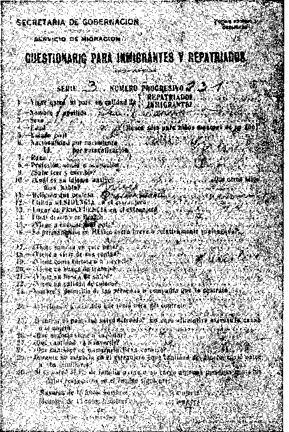
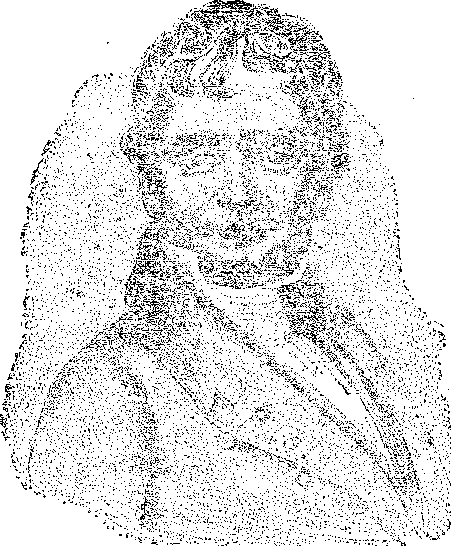

■TRUTH
MEXICO EXPELS
BISHOP CARUANA
RUBBER vs. WHEAT
5 s? a copy — • $ 1.00
a Ye ar
FERMENTATION AND
THE GERM THEORY
JUDGE RUTHERFORD
ANSWERS QUERIES
ADVENTISM
INDICTS ITSELF
VoL VII Bi-Weekly No. 181 "
August 25, 1926
OLD WORLD DYING
A NEW
WORLD BEGINNING
Contents of the Golden Age
Profits of the Pullman Company ...
Age Limit Must Be Raised .............. 739
New York’s Housing Commission .......... .
Mansions in the Skies .............. ,
, Social and Educational
Prison Labor in Tennessee ............ .
Skirts for Men, Too ............... .
The Art of Friendship .............. .
Finance—Commerce—Transportation Steel —• Oil — Motors —■ Railroads
The Dollar Steamship Company ......
Socialization of Railroads . .
Political—Domestic and Foreign
Annual Display of Force Abandoned ■
The Expulsion of Bishop Caruana
Extinction of Casualties in Scotland
Agriculture and Husbandry China Pheasant Culture . .•
Science and Invention Secret Radio Transmission .........
Home and Health Fermentation and the Germ Theory
Travel and Miscellany Cripple Creek, Colorado ................ 7C4
Religion and Philosophy Where Did Life Comb From? .............. 754 The End of the Thirty-Five Hundred Years ........ 753 Seventh-Day Adventism Indicts Itself .......... 756 Bible Questions and Answers ..... 765
Studies in “The Harp' of God”..... 757
Published every other Wednesday at 18 Concord Street, Brooklyn, N. Y., U. S. A. bv WOODWORTH^ HUDGINGS & MARTIN
Copartners and Proprietors Address: 18 Concord Street. Brooklyn, N.Y., U.S.A.
CLAYTON J. WOODWORTH . . . Editor ROBERT J. MARTIN . Business Manager WM. F. HUDGINGS . . Sec’y and Treas.
Five Cents a Copy—81.00 a Year Make Remittances to THE GOLDEN AGE
will be sent with the journal one month before the subscription expires. Change of
address, when requested, may be expected to appear on address label within one month.
Foreign Offices : British ..... 34 Craven Terrace, Lancaster Gate, London W. 2
Canadian . ........ 38-40 Irwin Avenue, Toronto, Ontario
Australasian ....... 495 Collins Street, Melbourne, Australia
South African ...... 6 Lelie Street, Cape Town, South Africa ’
Entered as second-class matter at Brooklyn, N. Y., under the Act of March 3, 1879
teLLr-L-^-^. ..... ' ^,,-r , .......= ~ '■ ........ ,,
Volume VII Brooklyn, N.Y., Wednesday, August 25. 1926 Number 181
What the World is Doing
THE Pullman Company has paid its stockholders $269,000,000 in cash dividends and $64,000,000 in stock dividends. Its net profits last year were $15,771,976. These dividends and profits went .chiefly to people whose principal activity consists in drawing their breath and eating three meals a day. The porters are paid $67.50 per month, and on completion of thirty years of faithful service may receive as high as $90 per month. In other words, the management of this unusual private enterprise lets the public pay in tips the salaries of its employes, while it receives the profits of their labor. .
IN A single year the United States Steel Corporation does nearly a billion and a half of business; the Standard Oil Company is a close second, with considerably over a billion; the General Motors Corporation is third with about three-quarters of a billion dollar business; the Pennsylvania Railroad Corporation is slightly less than the General Motors. The net profits of the Standard Oil Company last year were over $111,000,000.
The Dollar Steamship Company
THAT is not such a bad name, The Dollar Steamship Company, especially when one stops to consider that it has just bought from the United States Shipping Board five of the finest oil-burning steamers afloat for less than one-sixth of what it cost Uncle Sam to build each one of them. The Dollar Steamship Company saved at least twenty-five million dollars right there. Any concern oughf to be able to make a few dollars that can buy superior equipment for one-sixth of what it cost to make it. The ships are being operated on the Pacific and around the world.
UNCLE SAM has socialized the railroad systems of the country, while leaving them nominally under private management. The Interstate Commerce Commission supervises the issuance of railway securities, car supply and distribution, joint use of terminals, construction of new lines, abandonment of old lines, division of joint rates and fixing of rates. Additionally, after profits of railroads have reached a certain amount, one-half of the excess is placed in a revolving fund maintained to aid the weaker railroads.
npHE Tennessee State Federation of Labor has declared in favor of a law which will allow a prisoner the average wage of free labor for’work performed, the expense of maintaining the prisoner to be deducted from this wage, and the balance to go to his dependents. At present the state punishes a prisoner’s wife and children more than it does the prisoner himself.
The Convict Mines of Alabama
TN THE convict mines of Alabama it has been J- brought to light that prisoners were forced to mine coal while standing in water until their feet swelled and cracked, and were compelled to continue working even when sick. Instances were cited where the poor unfortunates begged their brutal jailers to put them out of their misery by killing them, and sometimes they did.
Aye Limit Must be Raised
THE age limit of useful employment must be raised. The world cannot go on discriminating against men who are over forty years of age, when the average of life is nearly sixty. There are now in the United States 5,500,000 persons
over 65 years of age, two-thirds of whom are self-supporting; one-sixth are on pension, and the other one-sixth are dependent on relatives and friends.
THE great broadcasting stations that sell the use of their studios to advertisers charge $100 for a ten minute period and $200 for a half hour. Much of the broadcasting now done is by advertisers, who reap their harvest from the opening and closing announcements. WBBR, WORD, and other stations owned by the International Bible Students Association do not put their studios at the disposal of advertisers. Their object is to bless their fellow men.
THIS heading is not exactly honest, but it will do for a heading this time. The New York Times contains the surprising and novel news that in the western part of Pennsylvania it has become quite the custom for farm boys to load a radio set on a wheelbarrow and do their milking and hoeing to the lilting tunes of the latest airs broadcast from New York stations. It seems to us that this is as it should be. Workers at manual tasks should be entertained while at work. In every Cuban cigar shop there is a reader whose duty it is to read to the workers one book after another, with the result that in a few years all the workers in the factory become exceedingly well informed on a great variety of subjects, and meanwhile clo their work better. '
Secret Radio Transmission
A BRITISH inventor, J. D. Chisholm, claims to have perfected a new method of radio transmission by which he can broadcast the spoken ■word anywhere and yet it cannot be picked up except with the special form of receiver which his company expects to make. He claims that he has already been offered a sum running into six figures for the use of the patent.
SOMEWHERE in Spain, it is alleged, there is an unlicensed and unlocated broadcasting ■ outfit, probably mounted in a motor car, which goes from place to place and fills the air in the evening with donkey brays, ironical remarks about General de Rivera and the government ofi the Dictator. The broadcaster knows that he is being diligently sought but has boasted over the radio that the police will never get him.
TPHE air mail service is spreading rapidly to all parts of the United States. There are now mail services to the Northwest as well as the Southwest; also an air mail in Florida.
"JUDGES are human after all. Senator King calls attention to the fact the Congress recently passed a law providing for twenty-four additional federal judges, and that there was a most unseemly scramble for the jobs. Further, he says that in some instances lawyers of the highest ability were sidetracked because they failed to get the support of the political powers that be.
THE wmy politicians do things is well illustrated by two events in the life of President Coolidge. In a speech at Williamsburg College he made a rather astonishing plea for states’ rights, especially in view of the many invasions of those rights in recent years; and then within a week he authorized the placing of state, county and municipal officers on the national payroll for enforcing prohibition, which is the greatest invasion of states’ rights in a generation.
World’s Impending Weather Calamity
THE Magazine of Wall Street contains an interview with Herbert Janvrin Browne, expert in the study of ocean currents, who expresses his conviction, based wholly on scientific studies, that Europe will not have more than a 40% harvest in 1927 and America not better than 60%. Mr. Browne goes on to remark that with abnormal areas of intensification in every ocean of the world, there is also now every solar influence cooperating to promote this intensification. He states that apart from his own studies the astronomers of Europe and the meteorologists, too, are convinced that a time of cumulative effects of sun and moon has arrived which, for millions of people in the world, will, in effect, be the end of the world. Not, he hastens on to say, that this terrestrial globe is to perish, but that weather conditions on it will be so abnormal that multitudes of men may perish and the complex fabric of the world's economic structure may reel under the blow. v
MODERN science has found out that there is something in “planting by the moon” after all. A little while ago we thought it was all superstition. Then somebody noticed that Moses, one of the wisest of men, made use of the expression “the precious things put forth by the moon” (Deuteronomy 33:14); and now along come the scientists and tell us that moonlight is polarized light, and that it is especially helpful in the production of certain forms of vegetable growth.
NEW YORK’S Housing Commission has rendered a great service to humanity by proving beyond question that private commercial enterprise cannot build apartments in New York City which will rent for less than $12.50 per room per month, and that the average family among the poor cannot pay more than $7 per room per month. It has put the whole question of housing the poor squarely up to the state, and the state must meet it by taking care of the people that constitute the state. State credit must be used, and regions for state financed homes must be set aside and developed.
A House of 462 Rooms
ONE of the Papal palaces in Rome outside of the Vatican precincts contains no less than 462 rooms. It contains the living quarters of six cardinals and the official quarters of one of the departments of the hierarchy.
’A Half-Million Dollar Playhouse
ON IIIS estate at Pocantico Hills, N. Y., John
D. Rockefeller, Jr., is building a $500,000 private playhouse in which he and his sons will have the benefits of a basketball court, a swimming pool, two bowling alleys, a billiard room, boys’ room, music room, lounge and breakfast room. There will be a fireplace in every room. Outside there will be baseball, tennis and croquet grounds.
TA ALLAS, Texas, on the evening of May 8th of this .year, experienced one of the most remarkable hailstorms in history. After ar ordinary hailstorm there suddenly followed for about ten minutes what might be called a super hailstorm in which some of the missiles measured twelve inches in circumference and weighed up to twenty-two ounces. Thousands of automobiles had their tops riddled and windshields and windows broken. A part of the city looked as though it had been subjected to machine-gun fire. It is estimated that a million dollars worth of damage was done in the city.
BECAUSE the air in South Africa is clearer -L' than any known elsewhere, the National Geographic Society is sending two American observers to the summit of Mount Brukkaros, Southwest Africa, 5,200 feet above sea level, where they will spend three years, far remote from any other white men, making daily observations of the sun and transmitting their reports daily by wire to Washington. It is expected that in three years it will be quite definitely ascertained in just what way the conditions in the sun affect weather on this planet.
Episcopalians Sliding Rome-wards
TT IS said that out of 24,000 English clergy JL 6,300, one in every four, belong to societies openly working for reunion with Rome, and that in thousands of Episcopalian churches the services performed in them cannot be distinguished from those performed in Roman Catholic places of worship. This includes the whole unscriptural list of candles, incense, pictures, vestments, holy water, Latin prayers, Mary worship, adoration of saints, confession, the eastward position, and the celebration of mass.
“Institutes of Public Ecclesiastical Law”
IN THE year 1901 there were published in
Rome by papal authority and approval two volumes bearing the above title. On page 142 of the second volume it is laid down that the church has the right to inflict the severest penalties, even death; and that when heretics are in the power of Catholic judges the judges must inflict on them the penalty not of death only but of fire. The same book declares that the church has the divine right to confiscate the property of heretics, imprison their persons and condemn them to the flames. This book was not written in the “dark ages”; it was 'published only twenty-five years ago.
Reverend Wheeler of Omaha has made a hit by admitting in his church paper that during the World War he made a consummate ass of himself by preaching patriotism instead of Christ Jesus. He goes on to say:
Clergymen cannot be hysterical press agents of the generals in war time, and the day after armistice expect folks to take them seriously as representatives of Jesus of Nazareth. Bishops, clergymen and chaplains broke all commandments of the Lord during the war, and now wonder why the common folks don’t crowd the churches. / ' "
A Backward Spring Correctly Foretold
THE weather prognosticators who foresaw a cold spring for 1926 guessed correctly. In the eastern part of the United States it was a general complaint that there was almost no seasonable spring weather, while Europe reported the most disastrous spring weather in the memory of any now living. Heavy snowfalls and floods did great damage there, and el sewhere there were intense cold and high winds until late in June.
FINDING that militarism is increasingly unpopular among people who have any real regard for the interests of humanity, the War Department has abandoned its plans for an annual show of force. Nobody is interested in guns and poison gas. Talk about man’s evolution from apes and monkeys! 'Where would you find an ape or a monkey that would be so heartless as to shoot his fellow or kill him with poison gas? Such refinement, which is called “civilization”,, is reserved principally for those who go to church. The churches seem to have a monopoly of that kind of civilization and that kind of Christianity.
Safety Pin Diet Not Recommended
A NEW YORK youngster swallowed a safety pin, forgetting to close the pin first before he swallowed it. Some doctors were for cutting the.baby open, but a child specialist knew better .and began feeding the youngster a rich heavy diet of cereals and'cream. In forty-nine hours the pin was recovered and had nearly. closed in the meantime. Incidentally, the baby gained a half pound in weight during those anxious hours. But for all that, we do not recommend a safety pin diet for babies, at least not unless the pins are closed before the youngsters swallow them.
TIT OMEN are not the only ones who can wear * ’ skirts. There are the priests and judges and the Scottish highlanders, the Hungarian shepherds, the rulers of India, and the chiefs of Ceylon; and in the latter instance they have the leg-of-mutton* sleeves which a generation ago were all the rage among the women of western lands. And then there is the Ku Klux nightshirt besides. The women have had most of the glory ,of skirts in the past, but not all of it; and now large numbers of them are even losing a considerable portion of what they did have in that direction.
ON ACCOUNT of the patience of the workers, and the fact that time means nothing in China, the Chinese women do the finest embroidery in.the world. It is said that a dozen women will spend as much as five years on one official robe, and that in making so small a thing as a spectacle case as many as twenty thousand stitches may be made. The ends of all threads are carefully concealed from view.
THE French and Belgian governments have sent a fleet of five tractors diagonally through Africa, from the northwest to the southeast, right through the heart of that vast continent. The tractors went via Timbuctoo, Lake Tchad, the Mobangi River and Albert Nyanza, to Mozambique Channel and thence by steamer to Madagascar. In one place the Belgian Government cut a road 350 miles long to enable the tractors to get through the jungle. To the south of this epoch-making trail a railway is being built, to connect Lake Tanganyika with the West Coast at Benguela. More and’ more goods are being shipped into Africa, and more and more are coming out of the Dark Continent.
The Expulsion of Bishop Caruana By Arturo M. Elias, Consul General of Mexico
[Bible Students confidently believe that at some time the antitypical Jezebel, the Roman Catholic Church, who for centuries has lied and bluffed and bulldozed and boycotted her way into notoriety and into power by the lowest of political methods, would be repaid in kind by being pitched out of the window by politicians who had once been in league with her. '
, Something like this is happening just now. At the very time when the Roman Church was painting Itself up for its big sideshow at Chicago, doing everything possible to get into the newspapers with stories about its seven specially built Pullman cars, all named after popes and cardinals and fitted with every luxury known to man, out came the Mexican Government with the following intensely interesting letter, which is supported by documentary proof here reproduced. We suggest that an appropriate title to this article would have been, “GIVING JEZEBEL THE AIR.”—Editor.] ,
J PON his return from Mexico, in Laredo, Texas, and other towns, Monsignor Caruana, Papal Delegate and Bishop of Porto Rico and West Indies, made to press representatives the statement that feeling free to speak in the United States he would make in Washington further declarations as to the reasons or lack of reasons which prompted the Mexican Government to expel him from Mexico. In view of the fact that several weeks have elapsed since these statements were made by Monsignor Caruana and no further declaration has been forthcoming from him, and in view of President Calles’ letter to the head of the Catholic church of Mexico, published in the press of this country on June 4, I think it is particularly fitting for me to request from you the courtesy of your columns to place before your readers and therefore before the American public the facts involving the expulsion of Monsignor Caruana from Mexico. This will be of great help in creating a good feeling between the peoples of Mexico and the United States.
The officials entrusted with the task of administrating the Government of Mexico have no desire to keep up the friction caused by the failure of a small group which has always distinguished itself for its rebelliousness in the observance of the laws adopted by the Mexican people for the conduct of its internal affairs. But in pursuance of the Government’s policy of broadcasting to the whole world the exact facts of what happens in Mexico, I ask you, in the interest of truthfulness as well as of the amity which should always exist between our two peoples, for space in which to state the facts concerning Mr. Caruana’s case.
A few weeks ago, as Consul General of Mexico, I issued a statement calling attention to the fact that the Papal Delegate had, in his own statement published in the press of the United States, made certain admissions that in themselves justify the action of the Mexican Government in expelling him from the country.
I am now sending you herewith a photostatic copy of his declarations made before the Mexican immigration authorities at Nuevo Laredo, Mexico, on March 4, when entering Mexico:
In addition to confirming his own admission that he, the apostolic delegate of the Pope and the Bishop of Porto Rico and West Indies, told the Mexican authorities he was “a teacher” this declaration shows that he went much farther than he admitted in his statement published throughout the United States. When asked the question, “Do you come as a tourist or on business ?” the declaration shows that the Bishop of
Porto Rico, who has stated since he left Mexico that he went there for the purpose of making an investigation for His Holiness, Pope Pius XI, replied that he was going to Mexico just as a “tourist”.
The declaration also shows that when this prelate of the church in a Spanish-speaking country, such as is Porto Rico, who is. from Italian origin, was asked if he knew any other language than English, he replied, “None.” When it came to the question in the declaration as to his “religious creed”, the prelate of the Catholic church and personal representative of Pope Pius XI, flatly answered “Protestant”.
The facts here set forth speak fordhemselves. In view of the fact that no one has ever been kept out of Mexico because of his or her religious creed, the claim of a Catholic prelate that he was a ‘'Protestant” is something that Monsignor Bishop Caruana will have to explain himself. But we think the answers set forth in the immigration declaration do explain the failure up to the present time of the intention announced by Bishop Caruana at the bordering towns of Texas, upon his return to the United States, to make further declarations regarding his expulsion from Mexico.
In the interest of a healthful understanding between the peoples of my country and the United States, I am submitting this statement to you for publication.
fN DAYS gone by, when men believed in the J- doctrine of the divine right of kings and the divine right of the clergy, all the land of Scotland belonged either to the Crown or to the Church: and so dwarfed and distorted had men's minds become by long oppression that this was considered to be as it ought to be.
As time went on, the various kings granted large tracts of land to the nobles as rewards for loyalty and bravery in battle, and these nobles in turn feued out their lands in smaller portions to the people, who in payment therefor were required to render such services as were demanded of them. This included fighting for the nobles whenever called upon, which was pretty frequently :in those days.
Then came the troublous times of the Reformation, when the Roman Catholic Church was forcibly relieved of its lands; and the lazy fat friars, who had been living well at the expense of the people, were turned out to seek other resting places.
These lands in time were also granted by the king to his favorites of the moment, until eventually the whole of Scotland came to be owned by these nobles, and the people 'were little better than slaves. The nobles were called “superiors” and the people “vassals”.
Gradually, as the call for fighters grew less frequent, payment by service was changed to payment in kind, such as poultry or grain; and this in turn was changed to yearly money payments called feuduties.
Over and above these annual feuduties, certain other payments were demanded by the superiors. These extra payments were called “casualties”’, and became payable on the death of a vassal, before his heir or any other successor could be entered in the lands.
These casualties varied greatly in amount, according to circumstances too technical to here explain ; but payment of them was always resented by the vassals, and they were considered to be, as in reality they were-, unjust burdens.
It is interesting to Bible students to note that the first stop toward ridding the land of these casualties was taken in 1874. That year marked the beginning of the last epoch in the history of the church, namely, the Laodicean period: and Laodicea means “Justice for the People”.
The God who numbers the hairs of our heads and marks the sparrow's fall is not unmindful of the cries of the people; but in His own due time He sets in motion the machinery, which all unimown to man works out His sovereign will.
In that year the Conveyancing (Scotland) Act was passed, which enabled the people, if they so desired, to redeem all future casualties, either by payment of a lump sum down or by an addition to the annual feuduty. Comparatively few, horvever, seemed to take advantage of this; no doubt the reason being that it meant a visit to a lawyer, which all wise people seek to avoid.
This Act also made it impossible for superiors to stipulate for casualties in future, but that instead, a double feuduty should be paid every twenty years or thereabout, which double feuduty was called a “duplicand”.
These duplicands were a great improvement to the casualties; for in many instances a casualty amounted to the net valued rental of the property built on the land and, if this happened to be a mill, -would probably amount to hundreds of pounds sterling, while the feuduty for the land might amount only to shillings.
Thus things went on until the year 1914, when the Feudal Casualties (Scotland) Act was passed for the compulsory abolition of all future casualties and duplicands, by payment of a sum down or by an addition to the feuduty. And now, after hundreds of years these relics of the dark ages are passing into oblivion. But it entails a tremendous amount of.work, and the Act allows until 1930 to complete it.
Circular letters in the “plainest” of lawyer language are sent to all feuars, explaining the matter of casualties and requesting them to send the titles of their feus for examination, and also, where possible, setting before them the amount required to be paid by them, and the method of calculating such amount.
To the majority of people the circular letter might as well be double dutch; and varied and amusing are the replies thereto. One man, evidently with a large bump of humor, whose wife received such a letter in error, wrote:
Dear Sirs: •
In the old days when we were struggling to get on top of the irregular French verbs, solace was given by the assurance that the English language was the most difficult to acquire; and this was disbelieved by 99.5 percent of the class. Your communication of the 29th inst. proves that the 99.5 percent were wrong.
The only casualties lately affecting my household were minor injuries to my bicycle and the illness of my wife. The former were repaired at a cost of 3/-; the later at a cost of not less than £3; and therefore I Consider the latter of the more importance. I give these domestic details, as I am under the impression that you desire to make me your confidant; and I wish to reciprocate.
I had a notion that the feudal. system had long since lapsed.
Finally, I should be pleased if you could see youi way to make a statement in plain English, minus legal bombast, advising me for what feu I am liable that necessitates the arithmetical formula to hand. For the required simplicity let me quote the term of invoice from a local wine merchant for an occasional bottle—-in the past:
To one bottle of aqua---------12/6.
In this example the honesty and simplicity are evident, My wife has no separate estate, and I am constantly hunting for one myself. My title up to date has been plain “Mister” Yours faithfully.
Vainly the lawyer tries to make the matter plain, but he himself has gotten so mixed up with musty deeds and obsolete language that each attempt adds bewilderment to the feuar, who in despair takes the matter to another lawyer; and we leave him there.
Old land titles dating hundreds of years back are brought from cellars and garrets to the light of day for careful examination; and during this process many complicated points of law arise, on which the lawyers themselves cannot agree. Then the matter is referred to Counsel for his opinion; and so the work goes on of ridding this land of ours of some of its unjust burdens.
To the man of the world the year 1874 is of no moment, and the year 1914 merely marks the beginning of the World War. But to those who are watching for the hand of God in the affairs of the church and the world, the year 1874 marks the second advent of our Lord, and 1914 marks the end of the Gentile times. To such the passing of these Acts in these years is not a' mere coincidence, but onward steps in the plan of God, which bring ever nearer the time when every man will sit under his own vine and fig tree; and though it may seem now that the lawyer has the best of it, he is working himself out of a job, and soon will find a better use to which to put his brains.
The writer, though once happy in a lawyer’s office, is now far happier tramping the hills of Bonny Scotland, carrying the precious message of truth to the lonely shepherds and the hardworking farmers, and rejoices in the happy privilege of telling the good tidings to the meek and of comforting those that mourn.
IN THE London Magazine Lancelot Lawton, L an authority on coal, writes an interesting article showing how Britain may possibly rid herself of the pall of smoke which now hangs over her. Concerning the smoke itself he says:
The truth is that a veil of smoke, which is only occasionally pierced by the beneficent rays of the sun, hangs over Britain.
And what is smoke? Smoke is the suspension of finely-divided soot in the air. And what is soot ? Soot is the deadliest of poisons. It contains, among other things, tar. Tar, if produced at certain high temperatures, is known to be a fruitful cause of cancer; for this statement there is full medical authority, based upon long observation of workers in tar-distilling factories and upon repeated experiments with animals. Soot also contains arsenic, and arsenic is a known cause of cancer.
Not only does this soot remain suspended in the air in the form of fine particles, creating what is called smoke, polluting the atmosphere and shutting out the sunshine; but, in the form of the black, evil-smelling stuff which we find up our chimneys, millions of tons of it descend upon our cities and towns. And it has been ascertained that more soot and smoke emerge from the domestic grate, where the cheerful fires we love so well are burning, than from the chimneys of industry. The most exclusive residential quarter is, therefore, not immune from the ravages of this black plague.
The extent of these ravages is appalling. For soot not only penetrates into all the organs of the human body, stimulating disease of various kinds, but it retards the growth of vegetation, and contains acids so powerful as to eat into stonework and metalwork; iron rails, for instance, lose weight from this cause.
How sad to reflect that Nature should have stored up so much light and heat—so much sunshine—in the form of coal, in the use of which we not only destroy and devitalize ourselves by converting it into poisons, but shut out from our lives the living light and heat, the vitamines of the sun itself, so necessary to healthy, happy existence! Could a greater tragedy of human error than this be imagined ?
The loss involved in this criminal mishandling of coal has been colossal. All the costs and casualties of wars sink into insignificance compared with it? Let us try to enumerate some of the items on this black bill: Death, disease, degeneration, vice; maintenance of hospitals, convalescent homes, prisons; widespread depression caused by the gloomy environment of smoke-begrimed towns; wastage of powers of production; damage to vegetation; repairs to buildings—it has been estimated that half the cost of repairing all public buildings is incurred because of damage done by soot; the importation of fifty million pounds3 worth of oil, all of which could be produced from coal at home; the sacrifice of a large amount of the available heat of coal, in many instances up to as much as thirty percent, and of all the valuable products which it contains; and, finally, the homely but by no means negligible detail of the nation’s washing bill, which—according to calculations carefully ascertained—is many millions more than it need be because of the dirt spread from coal fires. Thus we are guilty of double waste: waste caused by the destructive properties of smoke, and the waste of heat and energy caused by the sacrifice of the valuable products of which smoke consists.
3 Is it any wonder that at last all the world is struggling desperately to escape from this ugly, grimy death-trap of civilization which the wrongful use of coal has created?
Mr. Lancelot then writes of the new processes of coal distillation at low temperatures; and while admitting that there is something yet to be learned before this has reached perfection, he sees in it the following wonderful possibilities:
To get really satisfactory results one class of coal has sometimes to be mated (or blended) with another; that is in itself a fine art,. And what are these satisfactory-results ? ?
On an average, for every ton of coal distilled (as carbonized) 16 cwts. of smokeless fuel, 16 gallons of oil, and a quantity of gas of high calorific value are yielded. The smokeless fuel has a silvery appearance and resembles coke more than coal, but unlike coke it is free-burning and has no unpleasant smell. I have seen it burning in the open fire grate. It soon ignites, gives a bright blue smokeless flame, and radiates far more heat than does ordinary coal. But its greatest merit is that it creates no smoke, no soot.
Concerning the tar (or oil) produced, little is known except that it is superior to gasworks tar, inasmuch as it is of a petroleum-like character; it is known, moreover, to contain chemical compounds of a valuable order, only some of which have so far been definitely ascertained. And, finally, there is the gas, which is of a richer quality than gas produced in the gasworks.
In a word, this method (or principle) of distillation produces three smokeless fuels from coal—semi-coke, as it is called, oil, and gas. Nothing is wasted; whereas under the present primitive methods of using coal, so one well-known expert (Robert Hunter) tells us, we are dispersing into the air valuable products, 'motor spirit, illuminating and fuel oils, lubricating oils, and pitch to the value of £154,000,000 annually.
One of the most attractive features of this distillation process is not only that it produces economical fuels, but that it renders possible the use of what is at present the cheapest sort of coal. Every year, in the course of normal coal production, sixty million tons of small coal or slack are mined, for which no market can be found. There are millions upon millions of tons of this despised stuff down the mines, causing danger and discomfort to the men in the workings, or lying about in dumps on the surface disfiguring the landscape. It is ideal material for distillation purposes. And even were it not distilled, but ground into fine powder and consumed in its raw state, it would result in an economy of from twenty-five to fifty percent, as compared with lump coal.
One of the most remarkable discoveries of the age is that powdered coal is as convenient and as economical (if not more so) to handle as oil, for not only is it flexible and smokeless, but it dispenses with the need for stokers/ Assuming that Great Britain did not “oilify” her coal, she could pulverize much of it and thus save her mining industry. But the most economical method would be to extract the oil first, and powder the smokeless residue for industrial purposes. This, however, is another story.
Let us return to distillation and its products. The smokeless fuel (or semi-coke) could be used in open grates or consumed in super-power stations to produce electrical energy as cheaply as this is done in other' countries from waterpower. It is perfectly true as is sometimes said, that Great Britain has “a -black Niagara”. But it is wrong to say, as many say, that this is exclusively an age of electrification. It is an age of “gasification” as well as of electrification.
- If low temperature distillation is extensively resorted to, what is to become of all the gas produced ? Where will it find a market ? These are questions which are often raised. The answer is that in the future gas mains will be dispensed as widely as electrical energy ■ in Germany gas mains are already laid and operating over a distance as great as 200 miles. '
And here we may imagine a picture of the future; a future nearer perhaps than most of us dream of. Clean, bright, and smokeless; power and its sources distributed far and wide; gas and electricity on tap everywhere, so to speak; industry decentralized; the comforts of the town brought to the country and the freshness and beauty of the country transferred to the town; labor lightened, production cheapened, fertilization of -the land as a consequence of nitrogen extracted from the. air; electrification of crops to ensure abundant harvests; the application of mechanical power to replace all the human drudgery associated with agricultural work; and a supply of home-produced oil sufficient for all our needs. And all from coal.
China Pheasant Culture By J. A. Bohnet
THE Wallace Evans Game Farm, about three miles out from St. Charles, Illinois, is a wonderful and interesting institution. A party of four of us—not counting the youngster— left town in an automobile a few minutes before sundown to see what could be seen of the place in the gloaming of a beautiful summer day with the lowering fireball directly before our eyes.
Mistaking the road we went considerably more than a mile out of our way and had to turn back at the forks to reach the game farm. This farm covers several hundred acres of land and is entirely enclosed with a seven-foot-high poultry netting. Over this enclosure the birds cannot fly, by reason of having one wing taped close to the body by a certain peculiar fastening.
' As we drove along the roadway, wondering whether we would be allowed to drive in through the entrance gate, we saw in the large fields on both sides of us hundreds, if not thousands, of beautiful China pheasants, some standing still and others running about. It was an imposing sight. Some were in the trees and bushes, but most of them were on the ground.
A short walk further along brought us to the wild-duck pond, about ten acres in extent, and alive with ducks, and the shores all around the pond lined with them—bunches of them not over sixteen feet from us, and some flying about above the pond. There were many little duckhouses on the opposite shore. Afterwards we learned that from six to eight ducks in each one do the hatching.
Here we met two men, with a wagon containing crated pheasants, one of them following with a Winchester repeating shotgun. We asked, “Why the gun?” The answer came, “Oh, we sometimes shoot each other.”
They were evidently not giving out any information. But we were told that the crated birds were destined to the state of Pennsylvania for liberation, and that birds were being shipped to all parts of the country and Canada.
Across the left field we saw a herd of deer sporting on the green. They scampered away at the sight of us, and were soon lost from view in the foot-high grass. We passed the open gate, tremuluously feasting our eyes on the beautiful sight until we arrived at the end of the farm.
There to our immediate left at the foot of a hill, and two feet inside of the net fence, we discovered one of the birds wing-entangled on a
ne QOLDEN AGE
743 barbed wire, apparently dead. Good fortune! Here was our chance. We turned our car around and drove back the quarter of a mile and into the farm gate. “One of your birds is entarigled in the fence up yonder,” we reported. The ice Was broken; we were now in good standing. -
To our query, “May we view the . birds'?” we were advised to walk along close by the fence of high net-wire, and see them in the wooded field close by. But to our suggestive inquiry, “There must be thousands of these pheasants here,” we got the curt response: “We wish there were.”
We perceived the game-keepers were not to be pumped for any information; so we proceeded to walk along that fence. Wonderful the sight! There were China pheasants by the hundreds, silver pheasants by the dozen, and golden pheasants interspersed.
We watched the ducks awhile; and upon our return to our car we found a dead" eagle of six and one-half feet wing-stretch the gunman had just shot as it flew over him. This opened the conversation. He told us that the gamekeepers always carry a gun when going about the place, as there are hawks aplenty and some eagles. The eagle would be mounted and sold to some hunting club. It was the real American eagle, and a fine specimen. We now could ask any question, and get ready and satisfactory answers. Only a call to supper saved the man from a systematic “pumping”.
On our way back to town we stopped and inspected the supposedly dead bird in the fence wire and found it alive and helpless, nor could we get at it for its release, though we tried hard to, out of pity for the poor thing. Around went our car a second time to report the fact to the game men. They were very appreciative and assured us that it would be immediately attended to with a flashlight.
As we were passing out of the gate we met the chief game-keeper in an auto. He a'sked, “Was it your car that stopped at the foot of the hill?” Very evidently he had suspected us of trying to get some of the pheasants, and, by a circuitous route had driven around us to head us off. When he found that we had returned to report the entangled bird as still alive, he was apparently well satisfied that we were not after any of those pretty birds. The birds are well guarded by a gang of men; they must be.
The wild ducks are fed oats once a day, and other wild ducks are coaxed into the duck pond in big flocks. "When wanted for market they are carefully driven into a netted pen and caught one by one.
During the winter months the ducks are put into houses, where they have steam heated water in which to swim. When kindly treated, wild fowl can be made as tame as are domestic fowl. We found it so on this wild game farm.
On this farm there are upwards of 10,000 pheasants. The cockerels have tails about two feet in length and are very pretty. The female bird is less attractive and is considerably smaller.
Mansions in the Skies- By 'Joseph Greig
THE Book-Cadillac Guest Mansion of Detroit, Mich., opens a new’ chapter in hotelling now big with interest. Its total cost is said to be over $14,000,000. Its construction required 17,400,000 pounds of structural steel in it, as well as 4,000,000 bricks, 85 carloads of stone and terra cotta, 11,000,000 pounds of plaster, 2,000,000 pounds of lime, 1,000,000 square feet of gypsum tile, 6,000,000 pounds of sand, and 40,000 square feet of glass. This giant building is set in a mighty foundation 120 feet below the eurb, and covers eleven acres of ground space which at one time sold for a few cents.
Further, one of the marvels of this modern palace, is the crystal ball-room, where electric devices are said to display artificial splendor on a scale hitherto unapproached, in that formations of sunrises, sunsets and rainbows are producible at will. Indeed, the Detroit Free Press has moved its radio broadcasting machinery thither in order to give the fans world-wide the benefit of a lofty talent.
But after all is said and done in this achiev-ment of human genius, how lame it all will appear in the dazzling brilliancy of the divine paradise soon to be spread out on earth, worldwide ! The subduing of the earth has scarcely begun, as any one can see from a railway or an automobile journey anywhere. Most of the earth is still unfinished, awaiting the Better Day.
Fermentation and the Germ Theory
WEBS TER define s fermentation as the change of organic substances by which, under the influence of warmth, air and moisture, they are decomposed, usually with evolution of gas and heat, and their elements are recombined to form new compounds.
. This definition needs revision. Many inorganic substances undergo similar decomposition. An example is the slacking of coal or slate. Aberhalden mentions bacteria which thrive in sulphur springs, fermenting the hydrogen sulphide ; and others which ferment iron carbonate into iron ore.
We are all acquainted with many forms of fermentation: The souring of milk, the moulding of bread, the putrefaction of meat, the spoiling of fruit, the raising of bread dough by means of yeast, the industrial production of wines, beer, whiskey, vinegar, corn syrup, the rancidity of butter, etc. . '
In some forms of fermentation sugar and stanch evolve carbon dioxide gas; protein (as meat .and eggs) evolves carbon dioxide and hydrogen sulphide, and finally ammonia. ‘
By a common sequence starch ferments in order into dextrin, sugar, lactic acid, alcohol and acetic acids. Fats ferment into butyric and acetic acids. Proteins follow the following order: Proteoses, peptones, amino acids, ptomaines, lactic acid and acetic acid. Acetic acid is itself finally reduced to water and carbon dioxide.
However, in nature fermentation does not always follow the above order. More often it is hindered by natural factors, such as an excess or deficit of water or air. As wood that is burned under difficulties is only partly consumed while the balance is reduced to charcoal, so when fermentation is hindered, a part of the" organic matter is reduced to carbon and hydrocarbons, as the black loam in the soil and the coal and petroleum in the earth. Also, in many forms of fermentation the above sequence is reversed; and lactic acid may be fermented into sugar, starch or fat.
The power to ferment does not appear to be an inherent quality of the substance itself, but there must be present some outside force-or agent. Such agent, if a material substance, is called a ferment. Yeast is a ferment in the raising of bread dough and in the production of
By F. L. Wilson beer, changing some of the starch to alcohol and carbon dioxide.
If exposed to the forces of nature, all organic substances, and most inorganic as well, are constantly undergoing change; they are being built up or torn down. The carbonic acid in the atmosphere today will appear as a beautiful foliage of green leaves in the spring. By another year this foliage will appear as molding humus in the soil. The enormous production of organic matter soon disappears. Nothing that is will ‘*be. The most ingenious works of God and man crumble through the centuries into dust. All this is the work of fermentation. Let us see what are some of the agents which cause these mighty changes.
Bread will mold and meat will putrefy. If, however, they, are first thoroughly dried and are then kept in a dry place, they will keep sweet for many years. If they are kept frozen, they will keep almost indefinitely. Moisture and warmth are agents of fermentation.
Air is necessary for the molding of bread. It is not necessary for the action of yeast. Air is, in some cases, a necessary agent of fermentation.
If fresh milk is allowed to stand for a few days it becomes sour. Examination with the microscope reveals many minute plants, called lactic acid bacteria, growing in it and rapidly multiplying. These tiny plants got into the milk from the air. They change the sugar in the milk to lactic acid.
If the fresh milk is first treated with formaldehyde, the bacteria cannot live in it and the milk will not thus sour. Bacteria belong to a class of plants called fungi.; to which class yeast, mold and mushrooms also belong. Bacteria are agents of fermentation.
If fresh milk is exposed in a thunder storm, or to concussion from dynamite, it sours almost instantly. Eggs are likewise spoiled by concussion. Concussion is an agent of fermentation.
If clear lemon juice is kept in a glass bottle, in about four days white filaments of mold will be seen floating in it. On testing, it will be found that the citric acid is changing to alcohol. Visible fungi also are agents of fermentation.
If tomatoes are carefully sterilized by heat
and are sealed in clear glass cans, they will nevertheless spoil in a few weeks if exposed to sunlight. Sunlight is here 'an agent of fermentation, without the aid of bacteria.
If loganberries are carefully sterilized and sealed in tin cans and are then placed on the grocer’s shelves during the warmth of early summer, which is growing time, a great many of the cans will swell. Examination will reveal that the swelling cans are filled almost to bursting with carbon dioxide gas, and that the berries contain much alcohol. Warmth and ’ spring weather are agents of fermentation, without the aid of light and bacteria.
If an alcoholic mixture, such as hard cider, is allowed to stand, bacteria will oxidize the alcohol to acetic acid. Slow artificial oxidation of alcohol also produces acetic acid without the aid of bacteria. Many substances, both organic and inorganic, if exposed to the air at ordinary temperature undergo slow oxidation, whether bacteria be present or not. Oxygen is an agent of fermentation.
When meat putrefies, bacteria ferment the protein into ptomaines. If a protein solution is distilled with the mineral baryta, the protein is likewise fermented into ptomaines without the aid of bacteria. Starch is fermented into glucose by warming in a solution of dilute hydrochloric acid. Baryta and hydrochloric acids are here inorganic ferments.
If protein is mixed with the pepsin from the stomach, or with the milky juice of the pawpaw, in a few hours the protein will have changed to proteoses and amino, acids, even if all bacteria are excluded. Pepsin and pawpaw are called enzymes. An enzyme is not a living organism like bacteria, but simply an organic compound secreted by the living organism. Rennet curdles milk, ptyalin changes starch to sugar, lipase changes fats to fatty acids; other enzymes in the human body change sugar into glycogen, sugar into lactic acid, amino acids into protein, amino acids into lactic acid, lactic acid into fat, etc. An unknown number of enzymes in both plant and animal bodies act as agents of fermentation, either to tear down or build up.
Bacterial and Enzymotic Fermentation
AVING noted a few of the causes of fermentation, let us now confine our attention chiefly to two great classes which have special interest to us as living oeings: (1) Bacterial fermentation, which nature uses as a means of reducing dead and dying matter back to its earthly forms; and (2) enzymotic fermentation, which directly supports the life of plants and animals; bacteria for the dead, enzymes for the living.
It is said that a goat can live on old tin cans or anything. However this may be, let us not make bacteria a goat. Bacteria are very particular about their environment. For these tiny plants to thrive they must have moisture and warmth, and a suitable soil containing dead or dying organic matter.
Moreover, each kind of bacterium has its own choice of soil. One grows in sugar of milk, another in the protein of milk, another in the butterfat. One will grow in wet bread and another in comparatively dry bread. One grows in fresh cider and another in hard cider. Of the several which grow in meat, each prefers its own kind of protein. Given the particular requirement of soil, this soil must then be sown with bacterium seed.
Tyndall says that if healthy blood, or the juice of a fresh grape, is carefully drawn and exposed only to pure (free from bacteria) air it will not undergo bacterial fermentation. The fluids and tissues of man, or of the grape, normally contain no bacteria. The grape is protected by its skin, and the human body by its surface membranes, which, if intact, are bac-teria-proof. Dead or dying matter, or tissues which contain such, must be exposed to the bacteria of the air before infection can occur.
No doubt bacteria are an important factor in tetanus; yet ninety-nine persons may injure their feet and expose the flesh to tetanus bacteria and escape the disease, because their tissues did not contain enough filth to support the bacteria. After violence, poisoning, or internal derangements have broken the protective covering, bacteria may become a later incident in disease; being the result, not the cause, of disease.
Infection, in its original sense, means any quality or attribute that is transferred from one body to another. Hysteria, enthusiasm, good spirits, or patriotism is cleanly infectious. If bacteria or germs are transferred to another soil in which they thrive, this is a case of infection.
Germs Follow Disease
THE so-called radical branch of medicine, as illustrated by public health officers, newspaper propaganda, and some less intelligent physicians, is inclined to ascribe all disorders of human fermentation to bacteria. Since the laymen get their information, or misinformation, chiefly from such sources, popular use of the word infection has perverted and restricted its meaning. Infection has been nailed to the germ theory. These wild notions about bacteria are largely discounted with greater intelligence and broader knowledge of the subject.
The 'germ theory thus radically accepted says: All fevers, morbid swellings, pus formations, mucus formations, deranged fermentation, and all disorders that may appear as epidemics, are caused primarily by germs. Why this radical statement is given the honor of a theory is hard to understand. We have all seen epidemics of corns, calluses and bobbed hair, and we know they “are not caused by germs. Goiter and pellagra occur as epidemics, as the result of an inadequate food supply.
An epidemic of frozen noses may. follow a blizzard. An epidemic of cuts, bruises and broken bones follows a railroad wreck. Germs are not the cause of all epidemics. It cannot be proved that they are ever the primary cause of any disease. The diseased condition must exist first, germs becoming a later incident.
Pasteur said: "I will wager that if a fresh grape is plunged into an atmosphere of carbonic acid, it will produce alcohol and carbonic acid by the continued life of its own cells.” He proved this in the absence of bacteria. While Pasteur had belief in bacteria, by this stroke the great experimenter knocked out the modern popular germ theory. _
Living tissues, both of plants and animals, require oxygen for their continued life. If oxygen is withheld, the living cell will ferment its own organic compounds to obtain their oxygen. Thus sugar is fermented into-carbon dioxide and alcohol ; protein into carbon dioxide and ptomaines. Ptomaines are called the toxins of disease.
If, then, the human body is deprived of its full requirement of oxygen because of anemia; because of a deficit of potassium carbonate in the circulation to absorb and eliminate the waste carbon dioxide; or because of impure air; then because of this oxygen deficiency, the organism will ferment its own tissues, producing alcohol and ptomaines. The result is a so-called infectious fever.
It is a well-known physiological fact that thought, emotion and nerve impulses are accompanied by oxidation of the vital fats of brain and nerves. These vital fats contain a compound called choline, C5H15NO2. Oxidation of choline produces muscarine, C5H13NO2, and water. Muscarine is a ptomaine, or disease toxin, one of the most poisonous.
• Ordinarily the body is able to eliminate this toxin without harm. If, however, the brain or nerves are overworked; if because of shock, fear, anger, worry or other extreme emotion, the production of muscarine is excessive; if because of low vitality elimination is hindered, the body will quickly be flooded with this fatigue poison, giving the symptoms of a so-called infectious disease.
It is a legendary saying that fear of a disease wall cause the person to have it. There is more truth than fiction in this saying. Fear of germs is far more, deadly than the germs themselves.
Causes of Fermentation and Disease
IMILAR excessive fermentation of the vital fats may be produced by extreme exposure to heat. A person who habitually works in greatly overheated rooms suffers heat fatigue and exhaustion, often accompanied by swmllen glands, acne, boils and carbuncles. A prolonged spell of hot weather makes heat fatigue epidemic. The symptoms include great exhaustion, eruptions, blood poisoning and cholera morbus.
Overeating is another common cause of so-called infectious diseases. What can the body do with the excess of sugar, starch, fat or protein with which many of us gorge ourselves? If balanced by potassium, it may be fermented into soaps which are eliminated with the bile. But most of us take far too little fruits and watery vegetables to supply potassium.
In. some persons the excess is fermented into lactic acid, and then into adipose fat. More commonly, however, the excess, fuel foods must be disposed of by the surface membranes. Because of their excess the fuel foods cannot be properly assimilated, but form a loose combination with the vital cells of skin or mucous membranes that soon sloughs off. In the mucous membranes they are fermented into mucus, and in the skin into pus. Thus we get the Symptoms both of catarrh and of skin eruptions, common to so many diseases. Examination of the fresh pustule or a carbuncle will usually disclose no opening to the outside air by which bacterium seed could enter; but in time the poisonous matter may corrode an opening through the cuticle.
If an animal is first killed and the tissues of the skin are then allowed to undergo bacterial fermentation, no pus is produced, showing that pus is a product of life, of enzymotic fermentation. Disinfectants have proved a dismal failure. If irritating, they make the disorder worse.
Extreme exposure to cold causes the capillaries of the skin to contract, driving an extra volume of blood and nourishment to the inner membranes, where it is fermented into mucus. We say the victim has a cold, influenza or pneumonia.
In systemic skin eruptions, as measles or chickenpox, cold applied to the skin will stop the eruptions, and will drive the disease to the mucous membranes and cause pneumonia. Surety the application of cold did not change the “measles germs” to “pneumonia germs”. Rather, it disturbed the enzymotic fermentation.
Any excessive irritation of the surface membranes will cause the capillaries to expand, allowing an excess of blood and nourishment. If severe enough this may cause swelling. The excess nourishment may be built up into tumors, as corns, callus, wart, cancer, or may be fermented into pus or mucus. Such irritation need not be external. It may be caused by poisonous drugs taken internally, or by other poisons produced in the intestines or manufactured within the tissues.
In varicose veins, the enlarged capillaries allow too much nourishment to the skin; hence the common symptoms of eczema and ulcers.
The above cases of deranged fermentation within the human body are of course not bacterial but are enzymotic. Enzymotic fermentation is found in digestion, in preparation of the foods for distribution to the tissues, in assimilation, oxidation, and in preparation of the wastes for elimination.
In health, most of the wastes, outside of carbon dioxide, are fermented into bile and urine. If healthy fermentation is disturbed, the wastes may be fermented into pus and mucus, which are merely other forms in which the body disposes of what it no longer needs.
In some persons the power of fermentation is deficient. If unable to ferment sugar, one has diabetes; if unable to ferment protein, one has albuminuria; if unable to ferment fats, one has fat intolerance, which goes by several names such as emaciation, tuberculosis or pernicious anemia.
T^O WE catch disease from germs? A laborer -L<. came to me whose work required the daily handling of creosote with which both arms became covered. Blood poisoning developed under the creosote and nowhere else. Now, creosote is a first-class antiseptic. Bacteria cannot live in it. How did bacteria gain access to the skin through the creosote?
When the antiseptic was cleaned off and an astringent applied to reduce the nourishment to the skin, recovery was rapid. Similar cases have been noted where blood poisoning was caused by application of iodine, carbolic acid, corrosive sublimate or wood alcohol to the skin, all of which are first-class antiseptics.
Ivy poisoning is an infectious disease. It was formerly thought to be carried by germs. It is now known to be caused by the volatile oil of toxicodendron found in the ivy plant and dif-fused as a gas into the surrounding air.
Coming in contact with the surface membranes, this poisonous oil causes the appearance of water blisters that gradually spread and may be carried to other parts of the body. Similar infections are caused by many other vegetable oils, as oils of sumac, oleander, parsnip, and even tomato leaves.
Typhoid fever is said to be contracted from polluted drinking water or food. Now, typhoid bacteria can live in water but a short time. Sewage water is quick death to them. Neither can they stand sunlight and air.
Laws and Andrews (Prescott and Winslow, “Elem. of Water Bacteriology’) entirely failed to isolate the typhoid bacillus from the sewage of London, and found only two in a long series of tests with the sewage from a hospital containing forty typhoid patients1 The inability to produce the disease by inoculation of available test animals is a serious drawback to experimentation. Dr. Houston drank half pint potions of water which, a few weeks previously, had contained millions of typhoid bacilli.
The fact that the isolation of typhoid germs from water that apparently was causing typhoid has been so rare led bacteriologists to abandon this test altogether. Suspected water is now tested for the colon bacillus, a perfectly harmless fungus, as an index of pollution. We are hence led to believe that typhoid is not caused by typhoid germs, but by the mere fact of pollution.
Whence, then, come the myriads of typhoid germs present in the later stage of typhoid? How does the buzzard find its carrion or the mushroom its bed of mold? The germs in small numbers are with us always. They live on certain parts of decaying food in the intestines.
If the vitality is lowered by improper diet, if the tissues are filled almost to bursting with filth, if, then, the diseased intestinal membranes are irritated and corroded by intake of virulent chemical poisons, such as occur in sewage water, the germs will thrive better in the large supply of decaying matter in the intestinal walls than in the scant supply of the same material in the daily food.
The Ill-Effects of Vaccination
IF ONE is vaccinated with sterile smallpox virus, it may result in smallpox or varioloid. 'Unfortunately this hideous practice of injecting filth into the body may also result in blood poisoning, ulcers, Bright’s disease, scrofula or tuberculosis.
Dr. White, in Commo nhealth, says:
The virus of an. infectious disease, whether it be the germ itself or its poison, if introduced into the body, would under usual conditions produce the disease or some of its harmful or destructive manifestations.
Note that the poison will have the same effect as the living germs. Buchner found that if the yeast plants are killed they still have the power to ferment starch. Poisonous fungi contain ptomaines. They are just as deadly whether alive or dead.
It appears that the harm that we have attributed to some germs is due not the the fact that they are alive, but that they are poisonous. A few typhoid germs would do no harm whatever. If we took a quantity large enough to cause poisoning, the result might be unpleasant. Cooking is no safeguard against poisonous mushrooms, nor pasteurization against filthy milk. Certain fungi are not poisonous and will do no harm in any reasonable quantity, as illustrated by edible mushrooms.
Can we catch disease from live germs? Tests on healthy human beings fail. In 1919 twelve young men of the navy were exposed by spraying the sputum from influenza patients into their mouths and feeding it to them on bread. None took the disease. (See Amer. Jour, of Public Health, Feb. 1920, p. 167.)
Pettenkofer swallowed a glassful of cholera germs. Rodennund smeared his skin with smallpox virus. No cholera nor smallpox resulted. Bacteria will not grow in healthy living tissues. Tile surface membranes must first be broken, exposing filthy tissues.
One who visits the sick comes to know the characteristic odors of disease. These odors ar® not germs, but volatile ptomaines emanating from the sick one. These, like the volatile oil of the ivy, may be a means of carrying disease if they are poisonous. Filth is harmful, not because of the live germs present but because of the chemical poisons which it contains and which it diffuses to the surrounding air.
In our northern winters an epidemic of colds or other infectious disease usually follows the south wind blowing over miles of decaying vegetation. A warm winter means a full graveyard. The epidemic is largely corrected by pure and cold north breezes.
In 1918-19 influenza spread from Paris to Chicago in eight days, much faster than the liveliest germ could travel, even if it had been an animal with legs and wings. The prevailing winds at that time were southerly. At the same time our food supply was Hooverized, our nerves were frayed with anxiety, and millions of our soldier boys were punched with poison pus. Yet we lay it'to bacteria I
The Effects of Over-Civilization
INTESTINAL poisoning is a cause of much J- and varied disease. Human digestion is adapted by nature for raw, ripe foods, which it is able to reduce to such absorbable compounds as glucose, fatty acids and amino acids. Contrary to this provision of nature, by elaborate preparation our foods are half digested; some, like corn syrup, are fully digested, before we eat them. The mouth, teeth and stomach have practically nothing to do. The digestive canal is twice a< long as it needs to be!
If the food becomes wholly digested in the first half of the intestines, what happens in the last half? Being dead matter, the food decays with the production of irritant acids and poisonous ptomaines. The use of enemas, cathartics and liver pills that paralyze the intestines and dilate them into pockets in which the food lodges only aggravates the trouble.
In this intestinal decay we find the bacteria of souring and putrefaction. Hence, indigestion, although not considered contagious, is a true germ disease, although here also the requirement of filth is evident. We cannot say as much for those highly infectious disea.ses, smallpox, chickenpox, measles, scarlet fever, whooping cough, influenza and the common cold, for which no germs have ever been found!
The ptomaines produced by intestinal putrefaction are bases, partly volatile and mostly absorbable. Irritation by these poisons causes colitis, appendicitis and lumbago. Rising as bubbles in the canal, they counteract the natural acids in duodenum and stomach, closing the bile duct and causing constipation, stopping the stomach digestion, causing gastritis and bad breath.
Absorbed into the blood, they irritate the tissues, causing acne, eczema, hives, boils, carbuncles, tumors, cancer, rheumatism, sclerosis, ankylosis, consumption and Bright’s disease. In this case these non-contagious diseases are caused directly by irritation, indirectly by germs, and primarily by improper food.
We see nature all around us with her bacteria and other fungi constantly at work reducing the dead and dying matter that otherwise would soon encumber the earth back again to its earthly forms suitable again as food for higher plant life.
Without these beneficent scavengers green plants could not exist and man would soon perish for lack of food. There appears to be a kind of fungus for almost every conceivable organic substance. Bacteria are omnipresent. The air is so full of their seed that a sterile organic" solution need be exposed only for a second for the propei’ germ to find its proper soil.
We should remember that corpses and dead cabbages must depend upon these outside ferments. We are living beings. We have a system of fermentation quite independent of bacteria. We manufacture our own enzyme ferments which build up or tear down as the need may be. For our internal arrangements we are better off without bacteria. And bacteria will have nothing to do with us unless, mayhap, they take you for a dead one.
Once upon a time the boarders at a certain table came down with an epidemic. It was called ptomaine poisoning from stale oysters. A few months later many of them came down with an epidemic of colds. They said germs caused it. They apparently did not know that the food supply was as much to blame for one epidemic as the other; that a cold is a form of ptomaine poisoning due in most cases to improper food.
Callus is epidemic among the farmers every summer, and colds in the winter. If we know, as we think we do, that similar occupation causes the epidemic of callus, why make germs the goat for what we do not know?
The healthy body requires proper food, properly prepared. It requires, within a comparatively narrow margin, air, heat, moisture and light. It requires alternating work and rest. It requires reasonable freedom from mental interference, animal parasites, poisoning, filth, irritation and physical abuse. If any of these factors is extreme, disease results. If such a factor affects a whole community, disease becomes epidemic.
Where Did Life Come From? By Sidney Fraser (England)
IN The Golden Age, No. 152, under the caption “An Unscientific (?) Scientist” occurred the following statement: “The study of biogenesis soon shows there can be no reproduction of life without antecedent of life.” Reasoning on this statement, we come to the conclusion that since; there is life on this earth it must-have come from some source of life; and also that the ultimate source must be both eternal and self-existent.
To me this seems reasonable; and even if the theory that all- Life came from protoplasmic cells were true, then we might still ask the question: Whence did the cells get their life?
To a Bible student, the interesting fact is that the Bible shows Jehovah to be the source of life. (Luke 3: 38; John 5: 26; Genesis 2: 7) Then we further learn that the word Jehovah means “self-existing one”, and that Jehovah is everlasting.—Psalm 90: 2.
It would be inconsistent for anyone to hold the above scientific fact and at the same time to deny the existence of a living and intelligent Creator.
The End of the Thirty-Five Hundred Years Rt/ Prof. Louis F. Hildebrandt
SOMETIMES an apparently insignificent happening may mark a most important historic date. Thus God, in 1925, marked the end of the seventy typical jubilee cycles of fifty years each by causing a disturbance of the worship of the Jews in Jerusalem on Yom Kippur, their day of Atonement. This was done by the Turkish police, who were authorized by the English governor of Palestine to break up the worship of the Jews at their wailing wall in Jerusalem, in which are found some of the original foundation stones of Solomon's Temple. This occurred on Sept. 29, 1925, and thus marked to the day the full period of the' typical jubilee years in the divine plan of the ages. The following clipping is from the Chicago Tribune of Sept. 30, 1925:
JERUSALEM, Sept. 29.—Jewish indignation was aroused here when police interrupted divine service in front of the wailing Avail on atonement day. On the order of the government commissioner. Sir Ronald Storrs, all seats were removed. The congregation, in shrouds and prayer shawls, immediately proceeded to the governor’s residence, where Sir Ronald confirmed the Turkish order prohibiting the use of benches in front of the wailing wall. He announced that improvised seats would be allowed; but the Jews were not satisfied, declaring they would make official protest against a disturbance of their service.
A similar exactness in the fulfilment of a time prophecy is shown in the deliverance of the Jews from their Egyptian bondage, which occurred on the exact day set by Jehovah.—-Exodus 12:40 and 41.
The occurrence in Jerusalem on Sept. 29, 1925, shows that God’s arm has not been shortened, and that He still exercises full control over the actions and destinies of both men and nations in causing the fulfilment of His prophecies. Thus Paul said, in Acts 17:26: “He hath determined the times before appointed and the bounds of their habitation”; and in Deuteronomy 32: 8 we read: “The Most High divided to the nations their inheritance.”
Judge Rutherford’s book, Comfort for the Jews, contains a most remarkable compilation of the fulfilment of prophecies concerning the Jews. It does not contain the above data given about last Yom Kippur, because it was written before that occurred. In the Publishers’ Foreword you will note that it was published in October, 1925. This is a remarkable thing about the book; the Lord did not permit its appearance before October, 1925. The reason for this follows:
In Isaiah 40:1 and 2 was prophesied a message of comfort for the Jews, in the following words: “Comfort ye, comfort ye my people, saith your God. Speak ye comfortably to Jerusalem, and cry unto her that her warfare is accomplished.” The margin explains that the word “warfare” means “appointed time”. Just as soon as the Jews’ appointed time for celebrating the typical jubilees is past, God indicates it by permitting the breaking up of the wailing for the loss of their Solomonic splendor and glory, on the most solemn day in the entire year. To compensate for this He sends to them, thereafter, the message of comfort which shall eventually go to all peoples of the earth. This is because there is contained in the book a message of “salvation to every one that believetli, to the Jew first, and also to the Greek [Gentile].”—• Romans 1:16.
The tenth chapter of Ezekiel, concerning the Valley of Dry Bones, reveals with marvelous exactitude God’s minute attention to details, such as characterizes all prophecies of the Bible; and thus there is assured likewise the accurate fulfilment of these prophecies. This should then cause the earnest truth-seeker to realize that every one of the prophecies relating to “the' restitution of all things” (Acts 3: 21) is equally sure of fulfilment.
Seventh-Day Adventism Indicts Itself By H. A. Seklemian
READERS of The Golden Age are familiar with the fact that spiritism is demonism, and that every form of it is thoroughly condemned in the Bible. The following extracts from authorized books published and circulated by the Seventh-Day Adventists show, in their own words, that Seventh-Day Adventism is indeed and in fact a form of spiritism, and that the modem Adventist movement is an apostasy from the truths which began to be taught by [William Miller about 1829; although many still
FROM A PAINTING BY W. M. PRIOR,
claim him as founder of Adventism. Note the attack on him by Mrs. White, as contained in the last extract here cited. The real founder of the modern Adventist movement was Mrs. E. G. "White, who, in the light of what follows, Is seen to have been an obsessed spirit medium.
The following quotations are from a standard Adventist work entitled “Rise and Progress of Seventh-Day Adventists”, written by J. N. Loughborough, and copyrighted by the General Conference Association of the Seventh-Day Adventists, Battle Creek, Mich. We read:
[Page 91, Paragraph 4] He who is not limited in yays or means of working, and who placed the gifts of
the spirit in his church “when he ascended up on high,” who promised to be with his followers in preaching the gospel, “even unto the end of the world,” did communicate with them. He chose his own instrument for this purpose, selecting as his agent one who had not only surrendered all for him, but whose life trembled in the balance, “the weakest of the weak.” Within two months after the passing of the time (1844), Miss Ellen G. Harmon [Mrs. E. G. White], of Portland, Maine, then only about seventeen years of age, began to receive revelations. .
❖ * * #
[Page 94, Par. 1] In passing into vision she gives three enrapturing shouts of “Glory!” The second, and especially the third, fainter, but more thrilling than the first, the voice resembling that of one quite a distance from you, and just going out of hearing. Tor about four or five seconds she seems to drop down like a person in a swoon, or one having lost his strength, sometimes rising at once to her feet and walking about the room. There are frequent movements of the hands and arms, pointing to the right or left as her head turns. All these movements are made in a most graceful manner. In whatever position the hand or arm may be placed, it is impossible for any one to move it. Her eyes are always open, but she does not wink; her head is raised, and she is looking upward, not with a vacant stare, but with a pleasant expression, only differing from the normal in that she appears to be looking intently at some distant object. She does not breathe, yet her pulse beats regularly. Her countenance is pleasant, and the color of her face is florid as in her natural state.
5$ # # * %
[Page 96, Par. 2] As to Mrs. White’s condition while in vision, a few statements from eye-witnesses may be in place:
“I was present when Sister White had the above named vision in Waldron’s Hall. Hillsdale. In addition to the above statement, I heard the doctor say that Sister White’s condition in vision was ‘beyond his knowledge’. He also said, ‘There is something supernatural about that.’ [Signed] C. S. Glover, Battle Creek, Mich., Jan. 19. 1891.”
[Page 97, Par. 4, 5] At ‘the close of an exhortation given by Sister White to a large congregation that had assembled at the Adventist meeting-house, the blessing of God rested upon her in a remarkable degree, and she was taken off in vision while seated in her chair. There was present a Doctor Brown, a hale, strong man physically, a spirit medium. He had said that her visions were the same as spirit mediumship, and that if she had one where lie was, he could bring her out of it in one minute.
An invitation was given for any who desired to do do so to come forward, and by examination satisfy themselves as to her condition while in vision. The doctor came forward, but before he had half completed his examination, he turned deathly pale, and shook like an aspen leaf. Elder White said, “Will the doctor report her condition ?” He replied, “She does not breathe,” and rapidly made his way to the door. Those at the door who knew of his boasting said, “Go back, and do as you said you would; bring that woman out of the vision.” In great agitation ho grasped the knob of the door, but was not permitted to open it until inquiry was made by those near the door, “Doctor, what is it?” He replied, “God only knows; let me out of this house”; and out he went. It was evident that the spirit that influenced him as a medium was no more at rest in the presence of the power that controlled Sister White in vision, than were the demoniacs in the days of the Saviour, who inquired, “Art thou come hither to torment us before the time?”
$ * * * < *
[Page 103, Par. 2] I will here state some facts respecting the above vision, as related to me by Mrs. White’s father and mother, by her sister, Mrs. Sarah Belden, and others. In the room where the vision was given, there was lying on the bureau a very large Family Bible. It was one of an edition printed in Boston by Joseph Heale, in the year 1822. The book is eighteen by eleven inches, four inches in thickness, and weighs a little over eighteen pounds. She arose while in vision, and took this heavy Bible on her left arm, the book lying open, and held it out at right angles with her body; and then for over half an hour, with her right hand, turned from place to place, and pointed to different texts of Scripture, which she repeated while her eyes were looking upward, and in an opposite direction from the book. Her sister Sarah (afterward the wife of Stophen Belden), or, at times, some other person present, looked at every text to which her finger pointed, and saw clearly that in every instance she was repeating the scripture upon which her finger was resting.
£ & $ # &
[Page 107, Par. 2] Soon after this she went to Exeter, a small village not far from Garland. Here a heavy burden rested upon her, from which she could not be free until she related what had been shown her in regard to some fanatical persons who were present. In that vision the work of reproof and delineation of character began. She related the vision, mentioning that she was soon to return home, and had seen that these persons were anxious to visit Portland; but they had no work to do there, and would only injure the cause by their fanaticism. She declared that they were deceived in thinking that they were actuated by the spirit of ' God. Her testimony was very displeasing to these persons and their sympathizers. It cut directly across their anticipated course, and in consequence aroused in them feelings of jealousy and bitterness toward her.
« $ # « ft -
[Page 114, Par. 3] While some were thus engaged in the investigation of different points of Bible truth, Miss Harmon [who became Mrs. E. G. White] was traveling in various parts of New England, relating what had been shown her. In some instances she was told, in vision, where to go; and told also what difficulties she would meet. Her messages were,,especially, reproofs for those who were drifting into the doctrine of the spiritual advent of Christ [Italics ours.—Ed.], and encouraging all to hold on to the past experience.
* * * *
[Pages 116 and 117] Mr. Nichols related this to me at his own house, in Dorchester, in 1858. He said that he had made all his calculations to go to Boston on Sabbath morning with his carriage to take Miss Harmon to the proposed meeting. That evening, during family prayers, she was taken off in vision. After coming out of it, she said, “Brother Nichols, I am not going to Boston to-morrow; the Lord has shown me that I must go to Randolph. He has a work for me to do there.” Mr. Nichols had a great regard for his word. He had promised to take her to Boston the next day, and he anxiously inquired, “What shall I do with my word to Sargent and Robbins?” “Never mind that,” said Miss Harmon, “the Lord has bidden me go the other way.” “Well,” said Mr. Nichols, “I do not understand it.” “The Lord showed me that we would understand it when we get there,” said Miss Harmon. “Well,” said Mr. Nichols, “there is no way for you to get there unless we go and take you, but I do not know how I will explain matters to the brethren in Boston,”
Mr. Nichols further stated to me that “Sister Harmon saw their hypocrisy in the vision, that there would be no meeting in Boston on the Sabbath, that Sargent, Robbins, and others opposed would meet with the large band in Randolph (thirteen miles from Boston) on the Sabbath; that we must meet the opposers at Randolph, at their meeting on the Sabbath, and would convince the honest, the unprejudiced ones, whether her .visions were of the Lord or from' Satan”. Instead of going to Boston and then to Randolph, making a distance of twenty-two miles, they went direct to Randolph, arriving there about meeting time. There they found the very ones who had agreed to meet them in Boston. Mr. Nichols then said, “I understand it now.”
This effort of Sargent and Robbins to evade Miss Harmon’s testimony, and the manner in which she was directed so as to meet them, had great influence on the minds of some who were present.
“Early Writings of Mrs. E. G. White”
HIS well-known Adventist work is published by the California headquarters of the movement, known as the Pacific Press Publishing-Company. The subtitle in Volume One, reads: “Experiences, Views and Spiritual Gifts.” The following extracts from this book further indict the modern Seventh-Day Adventist movement as spiritistic (demonistic), notwithstanding that many good, well-meaning people call themselves Adventists, many of whom are probably not aware of the fact that the movement rests upon a demonistic foundation, and that spiritism is an abomination unto the Lord. (See Isaiah 8: .19; Deuteronomy 18:10-12.)' These extracts from Mrs. E. G. White’s writings not only show her departure from the truths of William Miller, but prove that the spirits which she accepted as her guide were “lying spirits”.—1 Tim. 4:1.
[ Page 11, Par. 3] In 1842 I constantly attended the Second Advent meetings in Portland, Me., and fully believed that the Lord was coming.
& >’! $ $ $
[Page 13, Par. 2] From this time,, up to December, 1844, my joys, trials, and disappointments were like those of iny dear Advent friends around me. At this time I visited one of our Advent sisters, and in the morning we bowed around the family altar. It was not an exciting occasion, and there were but five present, all women. While I was praying, the power of God came upon me as I had never felt it before. I was wrapt in a vision of God’s glory, and seemed to be rising higher and higher from the earth, and was shown something of the travels of the Advent people to the holy city, as narrated below. .
❖
[Page 17, Par. 1] Here we saw the tree of life and the throne of God. Out of the throne came a pure river of water, and on either side of the river was the tree of life. On one side of the river was a trunk of a tree, and a trunk on the other side of the river, both of pure, transparent gold. At first I thought I saw two trees. I looked again, and saw that they were united at the top in one tree. So it was the tree of life on either sides of the river of life. Its branches bowed to the place where we stood, and the fruit was glorious; it looked like gold mixed with, silver.
5jS ^5 &
[Page 18, Par. 2] As vm were traveling alone, we met a company who also were gazing at the glories of the place. I noticed red as a border on their garments; their crowns were brilliant; their robes were pure white. As we greeted them, I asked Jesus who they were. He said they were martyrs that had boon slain for Him. With them was an innumerable company of little ones; they also had a hem of red on their garments. Mount Zion was just before us, and on the mount was a glorious temple, and about it were seven other mountains, on which grew roses and lilies. And I saw the little ones climb, or, if they chose, use their little wings and fly to the top of the mountains, and pluck the never-fading flowers. There were all kinds of trees around the temple to beautify the place; the box, the pine, the fir, the oil, the myrtle, the pomegranate, and the fig-tree, bowed down with the weight of its timely figs; these made the place all over glorious. And as we were about to.enter the holy temple, Jesus raised His lovely voice and said, “Only the 144,000 enter this place,” and we shouted, “Alleluia!”
This temple was supported by seven pillars, all of transparent gold, set with pearls most glorious. The wonderful things I there saw, I can not describe. Oh, that I could talk in tire language of Canaan, then could I tell a little of the glory of the better world! I saw there tables of stone in which the names of the 144,Wo were engraved in letters of gold. After we beheld the glory of the temple, we went out; and Jesus left us, and went to the city. Soon we heard His lovely voice again, saying, “Come, My people, you have come out of great tribulation, and done My will; suffered for Me; come in to supper, for I will gird Myself, and serve you.” We shouted, “Alleluia! Glory!” and entered into the city. And I saw a table of pure silver; it was many miles in length, yet our eyes .could extend over it. I saw the fruit of the tree of life, the manna, almonds, figs, pomegranates, grapes, and many other kinds of f ruit. I asked Jesus to let me eat of the fruit. He said, “Mot now. Those who eat of the fruit of this land, go back to earth no more.”
* * He jss #
[Page 37, Par. 1] Then my attending angel directed me to the city again, where I saw four angels winging their way to the gate of the city. They were just presenting the golden card to the angel, at the gate, . . . The 144,000 triumphed. Their faces were lighted up with the glory of God. Then I was shown a company who were howling in agony. On their garments was written in large characters, “'Thou art weighed in the balance, and found wanting.” I asked who this company were. The angel said, “'These are they who have once kept the Sabbath and have given it up.”
$ £ « $ $
[Page 39] The Lord has given me a view of other worlds. Wings were given me; and an angel attended me from the city to a place that was bright and glorious. The grass of the place was living green, and the birds there warbled a sweet song. The inhabitants of the place were all sizes; they were noble, majestic, and lovely. They bore the express image of Jesus, and their countenances beamed with holy joy, expressive of the freedom and happiness of the place. I asked one of them why they were so much more lovely than those on the earth. The reply was, “We have lived in strict obedience to the commandments of God, and have not fallen by disobedience, like those of the earth.”
Then I saw two trees, one looked much like the tree of life in the city. The fruit of both looked beautiful, but of one they could not eat. They had power to eat both, but were forbidden to eat of one. Then my attending angel said to me, “None in this place have tasted of the forbidden tree; but if they should eat, they would fall.”
Then I was taken to a world which had seven moons. There I saw good old Enoch, who had been translated. On his right arm he bore a glorious palm, and on each leaf was written “Victory”. Around his head was a dazzling white wreath and leaves on the wreath; and in the middle of each leaf was written “Purity”, and around the wreath were stones of various colors, that shone brighter than the stars, and cast a reflection upon the letters and magnified them. On the back part of his bow that confined the wreath, and upon the bow, was written ‘'‘Holiness”. Above the wreath ivas a lovely crown that shone brighter than the sun. I asked him if this was the place he was taken to from the earth. He said, “It is not; the city is my home, and I have come to visit this place.” He moved about the place as if perfectly at home. I begged of my attending angel to let me remain in that place. I could not bear the thought of coming back to this dark world again.
« * « * *
[Page 41] December 16, 1848, the Lord gave me a view of the shaking of the powers of the heavens. I saw that when the Lord said “heaven”, in giving the signs recorded by Matthew, Mark, and Luke, He meant heaven, and when He said “earth” He meant earth. The powers of heaven are the sun, moon, and stars. They rule in the heavens. The powers of earth are those that rule on the earth. The powers of heaven will be shaken at the voice of God. Then the sun, moon, and stars will be moved out of their places. They will not pass away, but be shaken by the voice of God.
Dark, heavy clouds came up, and clashed against each other. The atmosphere parted and rolled back. Then we could look up through the open space in Orion, whence came the voice of God. [Italics ours. In the Scriptures the Pleiades are the symbol of divine government, while the constellation Orion represents the devil’s rule. (Job 38:31)—Ed.] The holy city will come down through that open space. I saw that the powers of the earth are now being shaken, and that events come in order. War and rumors of war, sword, famine and pestilence are first to shake the powers of earth; then the voice of God will shake the sun, moon, and stars, and this earth also. I saw that the shaking of the powers of Europe is not, as some teach, the shaking of the powers of heaven ; but it ■ fs the shaking of the angry nations.
« » » $ »
[Page 50, Par. 2] I saw that the cause of God had been hindered and dishonored by some traveling who had no message from God. Such will have to give an account to God for every dollar they have used in traveling where it was not their duty to go, because that money might have helped on the cause of God; and for the lack of the spiritual food that might have been given them by God’s called and chosen messengers, had they had the means, souls have starved and died. I saw that those who have strength to labor with their hands, and help sustain the cause, were as accountable for their strength as others were for their property.
[Page 75, Par. 2] Then I was pointed to some who are in the great error of believing that it is- their duty to go to Old Jerusalem, and think they have a work to do there before the Lord comes. ... I saw that such a mission would accomplish no real good, that it would take a long while to make a very few of the Jews believe even in the first advent of Christ, much more to believe in His second advent. ... I also saw that Old Jerusalem never would be built up [Italics ours.—Ed.]; and that Satan was doing his utmost to lead the minds of the children of the Lord into these things now.
* * * * *
[Page 78] I dreamed of seeing a temple, to which many people were flocking. Only those who took refuge in that temple would be saved when time should close. All who remained outside would be forever lost. . . . Fearing to be laughed at and ridiculed, I thought best to wait until the multitude were dispersed, or until I could enter unobserved by them. But the numbers increased instead of diminishing, and fearful of being too late I hastily left my home and pressed through the crowd. . . . On. entering the building, I saw that vast temple was supported by one immense pillar, and to this was tied a Lamb, all mangled and bleeding. We who were present seemed to know that this Lamb had been torn and bruised on our account. All who entered the temple must come before it and confess their sins.
$ , * # * «
[Page 87, Par. 2] I saw that the saints must get a thorough understanding of present truth, which they will be obliged to maintain from the Scriptures. They must understand the state of the dead; for the spirits of devils will yet appear to them, professing to be beloved friends and relatives, who will declare to them that the Sabbath has been changed, also other unscrip-tural doctrines.
♦ $ # * «
[Page 32] Vision of 18^7. We felt an unusual spirit of prayer. And as we prayed the Holy Ghost fell upon us. We were very happy. Soon I was lost to earthly things, and was wrapped in a vision of God’s glory. I saw an angel flying swiftly to me. He quickly carried me from the earth to the holy city. In the city I saw a temple, which I entered. I passed through a door before I came to the first vail. This vail was raised, and I passed into the holy place. Here I saw the altar of incense, the candlestick with seven lamps, and the table on which was the shewbread. After viewing the glory of the holy, Jesus raised the second vail and I passed into the holy of holies. . . .
In the ark was the golden pot of manna, Aaron’s rod that budded, and the tables of stone, which folded together like a book. Jesus opened and I saw the ten commandments written on them with the linger of God. On«one table were four, and on the other six. The four on the first table' shone brighter than the other six. But the fourth, the Sabbath commandment, shone above them all [Italics ours.—Ed.] ;... I saw that the Sabbath commandment was not nailed to the cross.... I saw that the holy Sabbath is, and will be, the separating wall between the true Israel of God.and unbelievers-; and that the Sabbath is the great question, to unite the hearts of God’s dear, waiting saints.
s>: S: *
[Page 117, Par. 1, 2] There is no example given in the Word for brethren to wash sisters’ feet; but there is an example for sisters to wash the feet of brethren. Mary washed the feet of Jesus with her tears, and wiped them with the hair of her head. I saw that the Lord had moved upon sisters to wash the feet of brethren, and that it was according to gospel order. . . . The holy salutation mentioned in the gospel of Jesus Christ by the Apostle Paul, should ever be considered in its true character. It is a holy kiss. ... There can be no appearance of evil when the holy kiss is given at a proper time and place.
[Page 126, Par. 1] Sorrow filled heaven as it was realized that man was lost, and that the world which God had created was to be filled with mortals doomed to misery, sickness, and death, and that there was no way of escape for the offender. The whole family of Adam must die. I then saw the lovely Jesus, and.beheld an expression of sympathy and sorrow upon His countenance. Soon I saw Him approach the exceeding bright light which enshrouded the Father. Said my accompanying angel, “He is in close converse with His Father.” The anxiety of the angels seemed to be intense while Jesus was communing with His Father. Three times He was shut in by the glorious light about the Father, and the third time He came from the Father we could see His person. His countenance was calm, free from all perplexity and trouble, and shone with a loveliness which words cannot describe. He then made known to the angelic choir that a way of escape had been made for lost man; that He had been pleading with His Father [Italics ours.—Ed.], and had obtained permission to give His own life as a ransom for the race, to bear their sins, and take the sentence of death upon Himself.”
* $ $ # $
[Page 255, Par. 1] Jesus then raised the cover of the ark, and lo I the tables of stone, with the ten commandments written upon them. They trace down the lively oracles, but start back with trembling when they see the fourth commandment among the ten holy precepts. with a brighter light shining upon it than upon the other nine, and a halo of glory all around it. [Italics ours.—Ed.]
« * * * *
[Page 257, Par. 1] My attention was then called to William Miller. He looked perplexed, and was bowed with anxiety and distress for his people. The company who had been united and loving in 1844 were losing their love, opposing one another, and falling into a cold, backslidden state. ... At length William Miller raised his voice against the light from heaven. He failed in not receiving the message which would have fully explained his disappointment and cast a light and glory on the past, . . . He leaned to human wisdom instead of divine, but being broken with arduous labor in his Master’s cause and by age, he was not as accountable as those who kept him from the truth. . . . God suffered him to fall under the power of Satan. [Italics ours. —-Ed.] ... So, also, I saw that William Miller erred as he was soon to enter the heavenly Canaan, in suffering his influence to go against the truth.
PERHAPS if we grown-ups and children could all come to a deeper realization of the great need of good conduct, when a lecture or sermon is delivered, it would be better.
The noise of the street, the incoming of late attendants, all make it difficult to get every word; and as it is important to get every word, it is really selfish to interrupt a. sermon or lecture. Besides it is more difficult for the speaker.
As I have had four children to discipline to attend both preaching services and Bible studies, I am. giving a few suggestions. To begin with, the congregation we were associated with .were well-behaved. .While kind to our children
they always gave the speaker good attention. This is a help to a mother, as children are more or less imitators. ■ -■
When a babe or a small child gets too loud, and the parent takes it out, never take the babe to a pretty picture or flower or to a store window ; but rather to a quiet, plain place.
If you are sure babe is not sick, give her a little shake as you go out. Never walk with her or make it very pleasant for her; or she will soon learn to cry to go for a ride or walk. In other words the sooner babe learns that there is no gain by crying during a sermon, the better.
If possible it is better for the mother to stay with her children in a near-by room. If her husband is free to help her he can take the older ones with him into the lecture room. If her husband is busy and cannot look after the older ones, perhaps she can give them over to a friend. Then the mother will be more free to take babe out if she cried.
Never let your children sit by other children if you. can avoid it. As soon as the children can understand -English, tell them why they should keep quiet during a sermon or lecture or a Bible study. Never let them play any where near while you are at a study or a lecture. Sitting still an hour and one-half cannot harm them. Let no one be disturbed if, a child fidgets a little. Many children are too nervous to sit perfectly still.
Now about the conduct of children at home: Children must play somewhere; and home is the best place. It is best not to expect perfection of even grown-ups, let alone children. However, it is well for children not to wear out the patience of visitors by sitting on their laps too much.
Now a word of defense for parents. People are too overworked to keep all up to a high standard; yet I believe that an effort should be made not'to disturb public speakers. If there is only one person that wants to learn more of God’s plan let us not interrupt or hinder.
I enjoyed all the articles on this subject in The Golden Age. While I did not approve of all Mr. Bohnet said, yet I got the thought of the need to convince -the children that we are their friends. Perhaps the Apostle Paul aimed to help us all when he said, “If any man think that he knoweth anything, he knoweth nothing yet as he ought to know.”—1 Corinthians 8: 2.
Rubber Vs. Wheat By P. 0. Mace
FOR some time past I have been noting through the press, and also by way of radio, the great displeasure expressed because of Britains control of raw rubber. The rubber magnates are so displeased that they are going so far as to put out rubber plantations in some of our islands and also in Africa, all of which meets with the approval of Mr. Hoover.
Such things foster hate, and hate fosters war. When we block the capitalists of another country, they become jealous of our commercial activity. All well and good is our squeal that Britain is placing a monopoly on rubber. But if we look backward just a few years, what about our actions in placing a limit on wheat sowings in 1919 in order that the price of that necessity might be kept high?
In September, 1919, Europe was threatened with starvation, through the influence of America. Our government advised the farmers to reduce their sowings fifteen percent on winter wheat and twelve percent on spring wheat. If it is right for this great United States government to advise our farmers in this wise and to keep the price of breadstuffs so high that the wage earner can hardly reach it, then in the name of' all the saints at once why is it wrong for England to limit rubber production?
Europe at that time was starving for bread. But no one of us over here has ever starved for rubber. Of course we run on fabric at times, but we get by at that.
There was also a period of five years when we priced cotton so outrageously high that England had to shut down her looms and turn her workers into the streets,, without labor, to starve. Of course that is O.K. The working man is supposed to starve a little. Then he will the better appreciate the celestial pie when he dies. But the rubber magnate! Do not tread on his toes. ¥ou are going in on his profits.
These are facts. So let us show them and say that it is good. Whether 1ike it or not, it will aid our nature and help us to rid ourselves of some o. . ■? cvA'■ bile. I have always noticed that when yyve a blow a blow on the nose he a1 j-x ■w'.xtA umde” than any one else for mercy. So let •• he good sports. Let us go on and sufll a? he ...... erciiU hands
of England and pay a high price for our raw rubber, with the joyous idea in ■ dew that the consumer will pay it all in the long run anyhow, as lie always does. And the next time we have a chance to gouge some one we will remember the Golden Rule—? Also
“Do'not look for wrong and evil, You will find them, if you do;
As you measiire to your neighbor He will measure back to you.”
The Art of Friendship
TN THIS complex world-life of ours there exist many things easy to be obtained, and still more that are difficult in winning. Making acquaintances may be placed under the former heading; making a friend, the latter.
Almost all people desire this gracious possession, but very few indeed, comparatively speaking, really know what it is to have one loyal, faithful, trusty friend, let alone several friends.
As an absolute fact, in a lifetime spent in touch with many lives, noble and good as well as shallow and bad, it is a rare and wonderful thing to find one soul of whom we can say with perfect confidence, “That man, that woman, is my friend, with the unalterable fidelity of the magnetic needle to the pole.”
Why is this? Man cries out about the fickle and fleeting friendships of daily life. We speak bitter things in our cynical distrust; we grumble and fume over our false friends, and in sheer disgust refuse to believe in anyone.
Is, then, friendship unattainable,' a dream, a myth, belonging to a vanished golden age, when men knew not selfishness? Not so. That age has yet to dawn, while beautiful histories of undying devotion and self-sacrificing zeal between two human beings are repeatedly forced upon our notice in every era; and we see that, given the requisite conditions, our inherent capacities for reciprocating friendship may be truly satisfied.
These conditions are very simple in statement. Two people are introduced to each other. They meet again and often. Each finds in the other some attractive traits, not of necessity similar, but appreciative. Mutual trust is engendered, and finally affection.
Now comes in the difficulty. A few months or years pass on, and one sad day the intimate companionship is sundered. “I cannot help it: A has disappointed me,” cries B, “he is not what I thought him.” “B is unjust,” says A; “he .jars upon me, and I cannot endure it.” Thus these two creatures walk apart for the rest of their lives; or, at best, there is merely the cool intercourse of acquaintance. Meanwhile A and B seek other friends, to go through precisely the
same experience.
Both are sincere, honest, warm-hearted; yet A and B have failed to continu,e friends, precisely because they have neglected to obey the conditions upon the observance of which a per
By Lloyd Lester
manent friendship alone can exist. They have not learned the art thereof; for it is an art, and. a fine and delicate one at that.
We meet with a person whose sympathies warmly respond to our own. His regard for us is sincere; we wish to retain it. How can we do so? By observing three simple rules: (1) Perfect courtesy, exercised more scrupulously the closer the intimacy becomes; (2) trust, even when your friend seems a little less responsive than usual; he may be physically unwell, or perplexed in business; or a thousand things quite unconnected with his friendly feeling, may be the cause; (3) and last, but by no means the least, avoid undue familiarity. Respect your friend's holy of holies, that wonderful inner shrine of spiritual experiences into which no other soul, however close its union, should or may enter.
There are times in our existence when the sweet, mysterious, indefinable impressions and yearning aspirations of our innermost sanctuary cannot bear the coarser medimn of speech; -when we cannot share, even with the mind most akin to our own, the consciousness or perception of another richer life, whose vague breathings by some unknown agency are borne in upon our soul. '
How destructive then to all communion, to all sympathy, when some well-meaning but totally careless friend comes in with imperious tread, and demands the full surrender of our sacred temple to his keeping. We are jarred, we are repulsed; and instinctively, reluctantly, we have to confess that he no longer has the right to share even in the holy place, much less the most holy.
Our impetuous friend is angry, hurt; possibly he deems us cold to him, not realizing that his own rash lack of respect declares him incapable of appreciating friendship in its noblest sense
To souls finely attuned, no words of mortal speech are necessary to express that intense sympathy Which checks each step over the threshold of another’s inner life. A. clasp of fingers, a look from the soul’s clear windows, a light touch, are eloquent and expressive. We may sympathize, we may be drawn, so close to the veil that we can hear through it the tenderthoughts, the holy mystic yearnings of our friend’s spirit; but never pass beyond this outer
curtain by which each soul is-separated from all others but its Creator, if you are worthy to be called his friend.
And then, while your own spirit kneels reverently without, in the holy place of hallowed friendship, how joyous, how sweet is the relation which follows, when your friend comes thither from his sacred altar and pours out into your responsive heart his hopes and dreams, his lofty aims, and the glorious lessons learned by him in his solitary retreat. This indeed is soul-fellowship, a friendship worthy of the name.
Again, in the daily walks of life, how difficult it is for some people to realize that relatives and friends have a right to liberty of action and thought apart from their kinfolk. Many a person is forced to realize the truth of that homely proverb, “Familiarity breeds contempt,” too painfully true in many cases.
We show deference to the opinions of a stranger, but those of our own family are often subjected to vulgar curiosity, coarse jesting, and lack of respect. Why should this be so ? Cannot our very homely family life be turned into a sacrament by the observance of those three rules mentioned above ?
No wonder our dearest and nearest shrink away from our rude touches, our impertinent familiarity, “because they are our own,” and seek more congenial society. Individuality in all its fine instincts needs protection against these grosser natures, .who -wound without knowing it those whom they best love.
The marital relation should be the most sympathetic of all; and yet how frequently it is rendered a distressful burden by the total incapacity of one or the other to recognize the fact that each has his or her own individual tastes and opinions, which demand as much respect as those of a stranger. We disgust and weary our companion by our tactless blundering, and thus many a soul is left to mourn his or her loneliness.
How exquisite is the perfect manifold rose; how wonderfully its beautiful involuted petals open one after the other until almost the delicate heart breathes its sweetness in shy self-revelation.
So it is with true friendship; gentle, unobtrusive, graceful, sympathetic. How we respond to such influences, and open our natures thereto, until we seem almost one with the delicate sensitive soul of our friend; yet pausing diffidently on the threshold, not daring to pass that veil which God in His wisdom provides for our spirit’s shrine.
If we with rude, hasty curiosity violently tear asunder the rose before it blooms, only colorless, scentless leaves will be our portion. The same is time of friendships.
We write these words for those sensitive natures who are capable of the highest sympathies, and we say to them, “Wait patiently, reverently, the full development of your friendships; learn to follow those few foregoing rules implicitly, and you will never be disappointed or chilled, nor find your friends become indifferent.”
The art of keeping a friend is summed up in three rules: . Perfect courtesy; full trust; and respect for your friend’s inner life. And.we might add a fourth and double rule: Let your friend retain his individuality; and retain also your own. Then will you know the precious gift of friendship; and by intuitive sympathy you will respond,'without a discord, to each vibration of your kindred souls.
THAT mankind craves happiness with intense fervor is plainly discernible in the immense amount of money annually expended in enterprises whose principal purpose is to produce laughter, lightness of spirit and oblivion, for the time being, to the sorrows and cares that beset even the most favored in material things. But like the search for the pot of gold at the end of the rainbow, the present pursuit of happiness via the road of jazz and artificial pleasure is bound to end in general disappointment. Ignoring that basic truth, that every effect must be preceded by a competent cause, or perhaps mistaking effects for causes, civilized (?) humanity synthesizes real and imaginary evidences of happiness, and then seeks from these to gain the goal of happiness itself.
Just as the man or woman who, after months or perhaps years of flagrantly violating the laws governing the maintenance of the physical organism, vainly seeks for some magic potion to prevent theoperation of the divinely established law, “Whatsoever a man soweth, that shall he also reap,” so also those who would eat the bread of happiness, after having sown only the seeds of distress and sorrow, are doomed to disappointment, when they seek to remedy matters by any artificial means. ,
Manifestly by divine design there is great diversity as respects the things that contribute to the production of human happiness. Certain conditions however must be fulfilled, both general and specific, in order that true and lasting happiness may be ultimately realized.
Take, for example, the matter of friendship. How many of those who long for but do not have particularly close friends, ever give a thought to the question of what conditions they are required to fulfil in order to gain them? Then again, of those who have such special friends, how many ever give any special concern to the matter of retaining their friendship? In most cases this is left to fortuitous circumstances ; and the result is that when adverse conditions obtain as respects the relationship many are unable, through sheer ignorance, to ease the .. strain and prevent a break.
An article from the pen of Lloyd Lester, a writer of years gone by, seems to deal with the subject of friendship so practically and fully that I append the same hereto, contenting myself with the qualifying comment that neither friendship nor any other legitimate source of happiness can yield its fullest fruit apart from the all-embracing rule, “The reverence of the Lord is the beginning of wisdom.” [The article referred, entitled “The Art of Friendship”, is reproduced on page 762.—Ed.]
Cripple Creek, Colorado (Contributed)
ABOUT twenty-five years ago the great gold mining town of Cripple Creek on the top of the Rocky Mountains about fifteen miles southwest of the widely known Pike’s Peak had a population of upwards of 30,000 people. Now it has dwindled to about 2,000. The elevation of Cripple Creek is between 9,000 and 10,000 feet above sea level. The town lies in a wide, irregular and rough-surfaced valley. The hillsides are pockmarked with thousands of prospect holes, some shallow and small, and some deep and extensive.
In its palmy days these hillsides were dotted with shanties and houses from one-room to six-room capacity and rents were high. Today three-fourths of these shacks and residences have been torn down and entirely removed.
The best of the remaining are rentable at about $5 per month. . They can be bought for from $5 to $75. A well-painted five-room house partly furnished was sold to a wrecking company for $25. The window panes or the furniture therein was well worth double that, price.
One naturally would expect to find a creek or stream running through or near Cripple, but no such thing is anywhere in evidence in this locality. The drinking and washing water is all piped in from the Pike’s Peak region. The lower portion of the valley is .what is usually called a dry creek—no water there except as a rain drainage.
In its gala days faro banks and poker rooms operated wide open, and saloons were everywhere in evidence. The miners had not only gold fever but likewise the gambling spirit. Gambling dens were open day and night, and shooting scraps were only too common.
This is not saying that bootlegging is not now’ extensively carried on here. There is stilldrunkenness in evidence. The remaining town is not too tight.
Gold mining is still extensively carried on throughout the Cripple Creek and adjacent Goldfield region. This gold-bearing valley—or gulch, as it is called—extends for miles in its irregular course in these mountain fastnesses, and here and there are vast mounds of excavated broken rock called dumps.
Some of the denizens make a meagre livelihood by sorting out the best of these rejected pieces of rock, putting them into sacks and having them milled for precious metals.
The metals found here other than gold, however, do not amount to much—not worth striving for—the supply being very limited.; lead being most dominant.
Of late new interest is awakening in going over the territory again, especially the placer or grass-root mining. When the big rush was on the field was so rushed over that the smaller paying places or spots were overrun or overlooked in the mad search for the mother lode and the big paying veins. Cripple Creek is known the world over as the 'greatest of all gold camps.
One finds difficulty in breathing this rare air, especially if one has a load to carry. One must frequently pause to get breath or he will feel dizzy and faint from the exertion.
The view of Pike’s Peak from Saddle Mountain, just above the town, is magnificent. The whole region hereabouts is one of beauty and grandeur. From the hilltops one can look dowm a thousand feet and feast his eyes upon the masses of clouds which shut out the view of the great valley lying to southward. It seems as though one could walk on that beautiful carpet of dense cloud.
Then when that cloud carpet has been dissipated by the sunshine or lifted to a higher altitude the view of the valley thousands of feet below is even more grand and inspiring. Ta southward are the Greenhorn Mountains and Spanish Peaks hundreds of miles away, yet standing out clear and plain in the air purity. One is awed by the scene.
The remaining people dearly love this now almost deserted town, notwithstanding its dilapidated condition. It savors of liberty and freedom aside from mountain grandeur and jieace.
There is a train daily each way between here and Colorado Springs, also a daily bus line likewise to Canon City southward connecting with the line to Leadville.
It is a treat to come to Cripple Creek. Up until Christmas there is little or no snow, and mostly perfect sunshine the while; a most healthful place. The people are neighborly and accommodating.
The automobile is the vehicle for getting about in this high altitude. It does not get. out of breath in the hill climbs. The burro is next. He seems indefatigable and can be seen everywhere you go.
[Radiocast from Watchtower WBBE on a wave length of 272.6 meters, by Judge Rutherford.]
Question : Explain Matthew 5: 29, 30, “And if thy right eye offend thee, pluck it out and cast it from thee: for it is profitable for thee that one of thy members should perish, and not that thy whole body should be cast into hell. 'And if thy right hand offend thee, cut it off, and cast it from thee: for it is profitable for thee that one of thy members should perish, and not that thy whole body should be cast into hell.”
Answer: The word here translated hell is a mistranslation of the word Gehenna, a valley of Jerusalem in which the garbage of the city was burned, and into which the bodies of criminals were sometimes thrown after their execution. Gehenna, then, represents not torment but destruction. Our Lord is pointing out in this passage that rather than suffer destruction one might better part with anything dear as a right eye or a right hand. This is merely a figure of speech, and is not intended to convey the idea that in heaven or in the restored earth it will be a common sight to see people with only one eye or one hand who have sacrificed the other rather than suffer a worse fate.
Question: If the nation wherein a Christian resides should be at war with another nation, and the enemy entered my house and attacked my mother, what should I do as a Christian?
Answer: Do exactly the same as you would do if the same thing happened in your home in a, time of peace; and it might happen any day now. You would try to prevent it, by persuasion, and by putting yourself in her place, and by appealing to the law; but you would not commit murder. ■
Question : Are not the Catholics doing wrong when they kneel before graven images and pray to them? Is it not a breaking of the commandment ?
Answer: In the first place, we are bound to say that we do not believe that any intelligent Christian would pray to a graven image as such; for surely the entire Bible is to the contrary of any such practice. But the commandment which the questioner evidently has in mind was never given to any Catholic. The commandment reads, “Thou shalt not make thee any graven image, or any likeness of any-
thing that is in heaven above, or that is in the earth beneath, or that is in the waters beneath the earth: thou shalt not bow down thyself to them, nor serve them.” (Deuteronomy 5:8,9) This is a part of the first commandment given to Israel, along with the other nine at Mount Sinai. The commandment was a part of the law covenant made only with the Jews.
Question: Will the beings who reign with Christ during the kingdom be spirit beings or earthly beings ?
Answer : They will be spirit beings, with and like their Lord and Head. But they will have earthly representatives, Abraham, Isaac, Jacob and all the faithful ancient worthies, who will be made princes in all the earth, fit representatives of the new order of things.
Bkooklth, N. T,
Question : Who is the serpent in Amos 9:3, "And though they hide themselves in the top of Carmel, I will search and take them out thence: and though they be hid from my sight in the bottom of the sea, thence will I command the serpent, and he shall bite them.”
Answer : The sea in its turbulence and restlessness seems to represent the condition of those not under religious restraint. Perhaps the passage means that if any who at heart reverence the Lord should try to hide away from Him by giving themselves over to the tides of strife and discontent, the Lord will let loose upon them that old serpent, the Devil, whose attacks upon them will cause them to turn for refuge to the God of their salvation.
Radio Programs
[Station WBBB, Staten Island, New York City.—272.6 meters.J
Sunday Morning, August 22
JO: 00 Watchtower Trio.
10: 20 Choral Singers.
10:30 Bible Lecture—Judge Rutherford.
11: 00 Choral Singers.
11:10 Watchtower Trio.
11: 20 Fred Twaroschk, tenor.
11: 30 Sunday School Lesson—W. N. Woodworth.
11: 45 Choral Singers.
11: 55 Watchtower Trio.
Sunday Morning, September 12
10: 00 Watchtower Instrumental Trio.
10: 20 Choral Singers.
10: 30 Bible Lecture—Judge Rutherford.
11: 00 Choral Singers.
11:10 Watchtower Instrumental Trio.
11: 20 Fred Franz, tenor.
11: 30 Sunday School Lesson—W. N. Woodworth. ■
11: 50 Choral Singers.
12: 00 Watchtower Instrumental Trio.
Sunday Afternoon, August 22
2: 00 Watchtower Orchestra.
2: 20 Fred Twaroschk, tenor.
2:30 Bible Lecture, “Glad Tidings for All People.”
•—W. N. Woodworth.
8: 00 Fred Twaroschk^ tenor.
8:10 Bible Instruction—John Dawson.
8: 30 Fred Twaroschk, tenor.
8: 40 Watchtower Orchestra.
Sunday Afternoon, September 12
2: 00 Watchtower Orchestra.
2: 20 Fred Franz, tenor.
2:30 Bible Lecture, “The Resurrection of the Dead” —Martin L. Hartman.
8: 00 L. Marion Brown, soprano.
3: 10 Bible Instruction—John Dawson.
3: 20 L. Marion Brown, soprano.
8: 40 Watchtower Orchestra.
Monday Evening, September. 6
8: 00 F. S. Barnes, pianist.
8:15 News Items of General Interest.
8: 25 R. S. Seklemian, baritone.
8 : 35 Bible Lecture—0. J. Woodworth.
8:50 R. S. Seklemian, baritone.
Thursday Evening, September 9
8: 00 Professor Charles Rohner, violinist.
8:10 L. Marion Brown, soprano.
8:25 Bible Lecture, “Prophecies Fulfilled’*
—W. E. Van Amburgh.
8:45 Professor Charles Rohner, violinist,
Sunday Evening, September 12
9: 00 Watchtower Violin Choir.
9: 20 Bible Questions and Answers—Judge Rutherford.
Monday Evening, September 13
8:00 Irene Kleinpeter, soprano.
8:10 Vocal Duets—Irene Kleinpeter and Fred Twaroschk, 8:20 “Listening in” on Professor Thomas Standwell and
Harry Goodwin.
8: 40 Fred Twaroschk, tenor.
8: 50 Vocal Duets—Irene Kleinpeter and Fred Twaroschk,
Saturday Evening, September 11 8:00 Josephine Locke, violinist. 8:10 Fred Franz, tenor.
8: 20 Bible Questions and Answers.
8: 40 Fred Franz, tenor.
9: 50 Josephine Locke, violinist
Thursday Evening; September 16
8: 00 Joseph Bonaccorso, violinist
8:10 Walter Stoll, tenor.
8: 20 Bible.. Lecture, “Prophetic Portrayals of Modern Inventions”—R. S. Seklemian.
8:40 Walter Stoll, tenor.
8: 50 ..Joseph Bonaccorso, violinist,
Saturday Evening, September 18
8: 00 Dr. Hans Haag, violinist.
8: 20 Fred Twaroschk, tenor.
8:30 Bible Questions and Answers,
8: 60 Fred Twaroschk, tenor.
With issue Number 60 we began running Judge Rutherford’s new book, in “The Harp of God”, with accompanying questions, taking place of both HrS Advanced and Juvenile Bible Studies which have been hitherto published.
540 Beyond question, the Scriptures show that Jesus, who in His prehuman existence was the Logos, left the heavenly courts, His life being transferred from spirit to human plane, took upon Him the nature and form of man, and became Jesus for the very purpose of saving the people from their sins. (Matthew 1:21) He came that man might have life. (John 10:10) He came and gave His life as a ransom, that others might live. (Matthew 20:28) He was rich and for our sakes became poor, that we .through His poverty might become rich. (2 Corinthians 8:9) When He was born as a man, the angels of heaven announced glad tidings of great joy which shall be unto all people; because the purpose of His birth was to redeem mankind and to restore to them that which had been lost. (Luke 2: 9-11) If there is to be no restoration of man to his original state, then all these purposes of God in sending His beloved Son to earth must fail. We know that God’s Word cannot fail.
641 It was the perfect man Adam who had sinned and by his sin lost the right to life and the blessings incident to a perfect human life. The only means provided for satisfying that judgment and releasing mankind was by substituting another perfect human life. The substitution of that one perfect human life for the other is called in the Scriptures the ransom-sacrifice. God made the specific promise that He would ransom man from the power of the grave, and that He would redeem man from death. Hosea 13:14) In keeping with this promise, His Word declares that ‘Jesus, by the grace of God, tasted death for every man’. (Hebrews 2:9) “There is one God, and one mediator between God and men, the man Christ Jesus, who gave himself a ransom for all, to be testified in due time.”—1 Timothy 2: 5, 6.
542 Unless, therefore, mankind has a full and fair opportunity to be restored to the perfect condition enjoyed by father Adam while in Eden, then all of these promises of Jehovah are meaningless and must fail. If they should fail, such would prove that God is not all-powerful. It would also prove that His promises are not sure; whereas the Scriptures declare: “All the promises of God, -whatever their number, have their confirmation in him; and for this reason through him also our ‘Amen’ acknowledges their truth and promotes the glory of God through our faith. But he who is making us as well as you stedfast through union with the anointed one, and has anointed us, is God, and he has also set his seal upon us, and has put his spirit into our hearts as a pledge and foretaste of future blessing.”—2 Corinthians 1:20-22, Weymouth.
543 Jesus arose from the dead and ascended, on high. The fact of His resurrection is a guarantee that all men shall have an opportunity for life. If there is to be no restoration of the human race, then the resurrection of Jesus and the awakening of others from the dead are meaningless and for no purpose. If we believe the Scriptures, we must believe in restoration, because God “hath appointed a day, in the which he will judge the world in righteousness by that man whom he hath ordained; whereof he hath given assurance unto all men, in that he hath raised him from the dead”. (Acts 17: 31) If we do not accept the doctrine of restoration of the human race, then we must ignore the positive words of the apostle who wrote: “Now is Christ risen from the dead, and become the firstfruits of them that slept. For since by man came death, by man. came also the resurrection of the dead. For as in Adam all die, even so in Christ shall all be made alive. But every man in his own order: Christ the firstfruits; afterward they that are Christ’s at his coming. Then cometh the end, when he shall have delivered up the kingdom to God, even the Father; when he shall have put down all rule and authority and power. For he must reign, till he hath put all enemies under his feet. The last enemy that shall be destroyed is death.”—1 Corinthians 15:20-26.
QUESTIONS ON “THE HARP OF GOD”
Would Jesus’ coming, death, and resurrection accomplish anything if there is no such thing as restoration of the human race? Give Scriptural reason for answer. ([Sec. 542.
What guarantee is given to man by the resurrection of Jesus? Give Scriptural proof, 543.
The New I.B.S.A. Publication
DELIVERANCE
—.......——
A first edition, a sort of pre-run, just about ample to supply the first demand of interested readers, is just off the press. ■
The desire to have our interested readers supplied early fixed the copies of the first edition both in quantity and price.
Other editions will follow but copies, will only be available in about two months’ time.
Deliverance contains 384 pages. With Scriptural Index of Bible quotations it proves to be a book for ready reference. An exhaustive index locates the reading matter by subjects.
Deliverance is cloth-bound and gold-stamped— 50c per copy in U. S. A,, 55c in Canada, and 2/3 in England.
A vivid description of the Divine Plan particularly outlining God’s progressive steps against evil and showing the final overthrowing of the Devil and all of his wicked institutions, the deliverance of the people, and the establishment of the righteous government on earth.
INTERNATIONAL
BROOKLYN
NEW YORK